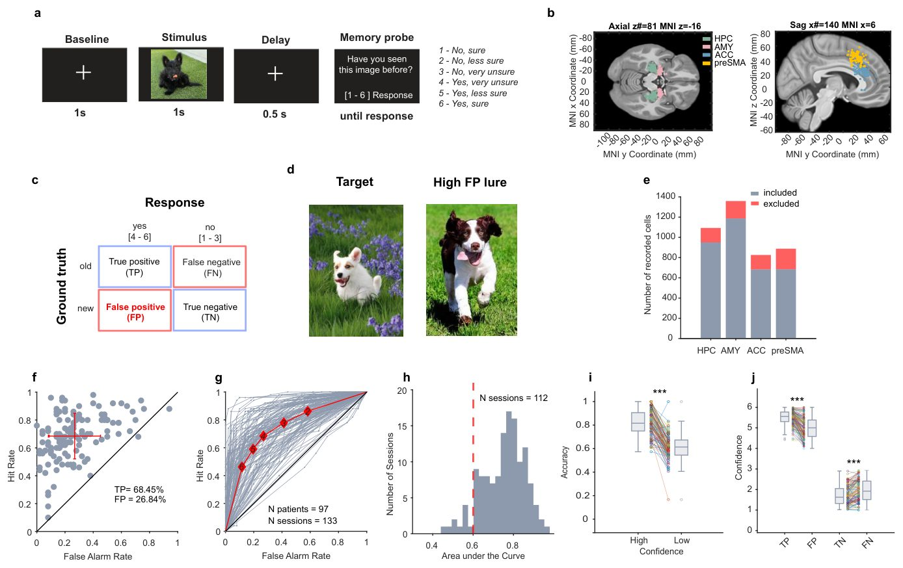
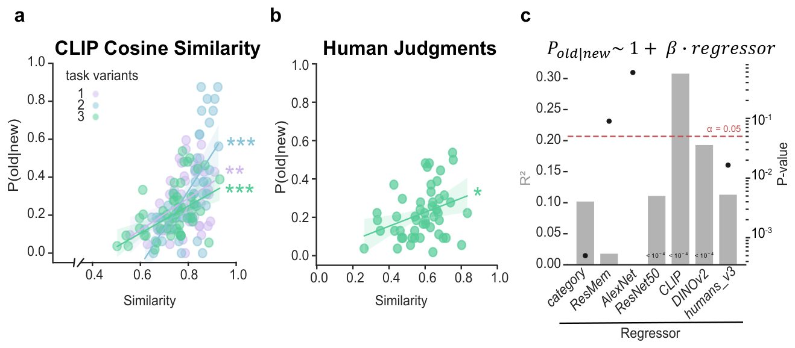
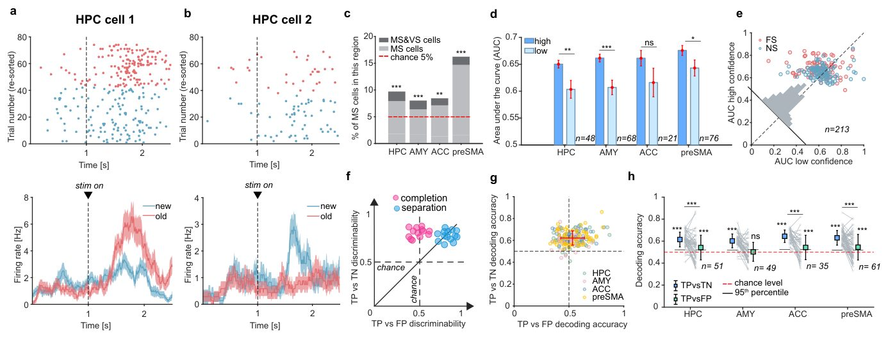
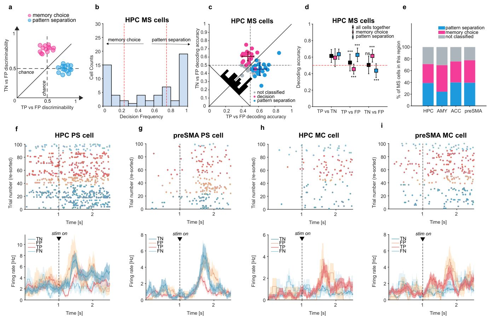
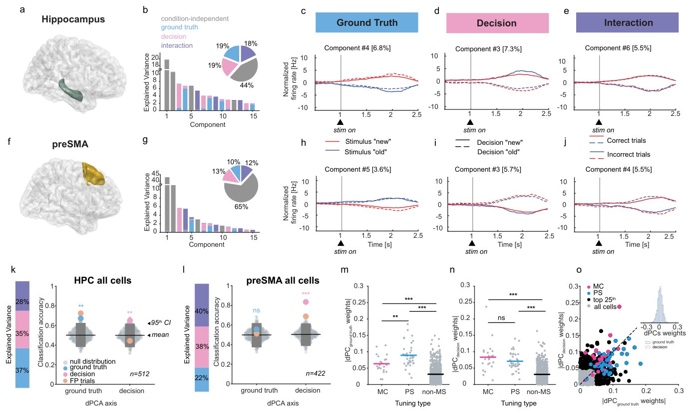
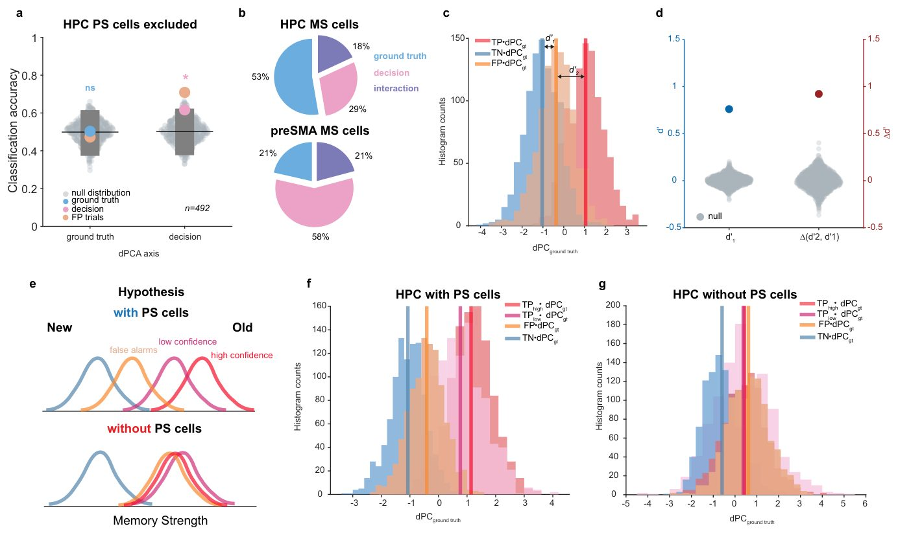

Ми танысты жаңадан қалай ажыратады: жадтың жасушалық коды табылды
{kind=link}

Сыртқы ұқсастыққа байланысты бейтаныс затты ескі деп қабылдағанда, мида образдарды ажырату механизмі бұзылады. Адамның жеке жүйке жасушалары бұл міндетпен қалай күресетіні ұзақ уақыт бойы белгісіз болып келді. Нейробиологтар сынақ кезінде пациенттердің мыңдаған нейрондарының электрлік белсенділігін жазып алды. Гиппокампта шынайы таныс образдар мен оларға ұқсас жалған стимулдарды ажырататын арнайы жасушалар бар екені анықталды. Бұл жаңалық адамдарда есте сақтауды бөлектеудің жасушалық механизмі барын алғаш рет растайды.
Басты ойлар
- Жад тесттері кезінде 97 пациенттің 3506 нейроны жазылып алынды.
- Нақты естеліктер мен жалған образдарды ажырататын нейрондар табылды.
- Бұл жасушаларды алып тастау гиппокамптағы жад күшін бұзады.
Толығырақ
Зерттеушілер мидың жаңа ақпарат пен бұрынғы естеліктер арасындағы шекараны қалай сызатынын анықтауға назар аударды. Образдарды ажырату деп аталатын бұл үдеріс жануарларда бұрыннан зерттелгенімен, адамдарда жеке нейрондар деңгейінде тікелей дәлелдер болмаған. Жұмыс барысында ғалымдар визуалды образдарды тану тесті кезінде 97 пациенттің 3506 жеке нейронының белсенділігін жазып алды. Қатысушыларға суреттер көрсетіліп, оларды бұрын көрген-көрмегенін анықтау және өз сенімділігін бағалау сұралды.
Талдау көрсеткендей, дұрыс танылған нысандар мен ескі деп қате қабылданған жаңа суреттерге әртүрлі жауап беретін арнайы нейрондар бар. Мұндай жасушалар гиппокампта және мидың басқа аймақтарында анықталды. Егер бұл элементтер модельден алынып тасталса, гиппокамптағы жад күшінің градиенті жоғалады, бұл олардың ұқсас естелік іздерін ажыратудағы рөлін көрсетеді. Нейрондық популяциялар деңгейінде бұл сигналдар гиппокамптағы жадтың шынайылығын және моторлы аймақтағы шешімді болжады.
Алынған нәтижелер адамдардың эпизодтық жадты кодтау үшін образдарды ажыратуды қолданатыны туралы бұрынғы пікірталасты шешеді. Бұған дейін деректердің көбі функционалдық магниттік-резонанстық томография арқылы алынған болатын. Жаңа зерттеу жеке нейрондардың белсенділігін жад қателерімен байланыстырып, мидың сигналдардан шешімге дейінгі жолын көрсетеді.
Шектеулер
Зерттеу дәріге төзімді эпилепсиясы бар пациенттерде жүргізілді, бұл олардың самай бөліктерінің жұмысына әсер етуі мүмкін.
Мақаланың толық аудармасы
Түйіндеме
Теориялық модельдер паттерндерді ажырату — гиппокамп жүзеге асырады деп есептелетін есептеу процесі — бізге таныс және жаңа нысандарды ажыратуға мүмкіндік беретінін болжайды. Алайда, паттерндерді ажырату адам гиппокампында жұмыс істей ме, жоқ па, деген мәселе даулы болып қалуда, өйткені жеке нейрондар деңгейінде ешқандай коррелят анықталмаған. Біз 97 пациент есте сақтау қабілетін тексеру тапсырмасын орындау кезінде адам миындағы 3506 жеке нейронның белсенділігін тіркедік, мұнда бұрын көрген суреттерге ұқсас жаңа суреттер жалған естеліктерге және соған байланысты мінез-құлық қателеріне әкелді.
Біз ми бойынша таралған жадқа селективті нейрондардың екі түрін анықтадық: қате танылған жаңа және дұрыс танылған таныс суреттерге паттерндерді ажыратумен үйлесімді түрде әртүрлі жауап беретін нейрондар және субъектінің таңдауын білдіретін нейрондар. Популяция деңгейінде бұл жасушалар гиппокамптағы мнемоникалық ақиқатты және пре-суплементарлы моторлы аймақтағы шешімді болжады, бұл мнемоникалық сигналдардан шешім қабылдауға дейінгі прогрессияны көрсетеді. Паттерндерді ажырату сигналдарын беретін жасушаларды алып тастау гиппокампта бар үздіксіз жад күшінің градиентін жойды, бұл осы жасушалардың әртүрлі күштегі естеліктерді ажыратудағы рөлін көрсетеді. Бұл нәтижелер адам гиппокампындағы мнемоникалық паттерндерді ажырату үшін жеке жасушалық коррелятты белгілейді және оның эпизодтық жадтағы мінез-құлықтық маңыздылығын көрсетеді.
Маңызды
Адам гиппокампында паттерндерді ажыратуды қамтамасыз ететін нейрондар анықталды: олар ұқсас жаңа және таныс стимулдарды ажыратады, бұл нақты эпизодтық естеліктерді қалыптастыру үшін өте маңызды. [!tip] Паттерндерді ажырату — бұл ми ұқсас кіріс сигналдарын нақты, бір-біріне ұқсамайтын нейрондық бейнелерге айналдыратын нейробиологиялық процесс, ол ұқсас оқиғалар арасындағы шатасудың алдын алады.
Кіріспе
Адамдар жеке тәжірибелердің үлкен көлемдегі егжей-тегжейлі естеліктерін қалыптастыра алады, бұл қабілет бізге жоспарлауға, үйренуге және шешім қабылдауға мүмкіндік береді. Тәжірибеміздің көп бөлігі өте ұқсас ортада (мысалы, үйде немесе кеңседе) орын алғанына қарамастан, олардың көбісі бөлек естеліктер ретінде кодталады. Маңызды ашық сұрақтардың бірі — мидың бұл тапсырманы қалай орындайтыны. Бұл мәселені шешу екі түрлі, сырттай қарағанда үйлеспейтін мақсаттар арасындағы ымыраны табуды талап етеді. Бір жағынан, таныс зат көптеген әртүрлі контексттерде танылуы керек, бұл жалпылау мен инварианттылықты талап етеді. Екінші жағынан, жаңа заттар, тіпті өте ұқсас болса да, сақталған естеліктерден ерекшеленуі керек, бұл нәзік мнемоникалық ажыратуды талап етеді. Маңыздысы, бұл ажырату көбінесе бір рет әсер еткеннен кейін (мысалы, эпизодтық жадтағыдай) орын алуы керек. Бұл бір-бірін толықтыратын процестер сәйкесінше pattern-ді аяқтау (pattern completion) және pattern-ді бөлу (pattern separation) деп аталады. Осыған орай, саладағы басты назар жадтың қалыптасуы үшін маңызды гиппокампта (HPC) осы екі процестің белгілерін анықтауға бағытталған. Алайда, ауқымды әдебиеттерге қарамастан, pattern-ді бөлу адамның эпизодтық жадында мүлдем рөл атқара ма, жоқ па, белгісіз күйінде қалуда. Білімнің бұл үлкен олқылығының басты себебі — адамдарда pattern-ді бөлудің бірде-бір нейрондық корреляты анықталмаған. Бұл жерде біз жад күші сигналдары үшін осындай коррелятты анықтаймыз.
Маңызды
Бұл жұмыста адам гиппокампындағы pattern-ді бөлудің нейрондық корреляты алғаш рет анықталды, бұл оның эпизодтық жадтағы рөлі туралы ұзаққа созылған дауды шешуге мүмкіндік береді.
Адам жадындағы pattern-ді бөлу рөлі үшін нейробиологиялық дәлелдер негізінен fMRI көмегімен инвазивті емес нейробейнелеуден алынған. BOLD-fMRI деңгейінде гиппокамптағы белсенділік бұрын көрінген заттарға ұқсас жаңа стимулдар болып табылатын «тартымды» (lure) стимулдарға қатысты қайталанудың басылуының жоқтығын көрсетеді. Бұл pattern өте ұқсас кіріс деректері арасындағы сәтті ажыратудың дәлелі ретінде және сол арқылы pattern-ді бөлу процесінің көрінісі ретінде кеңінен қабылданған. Алайда, бірнеше әртүрлі теориялық механизмдер — соның ішінде конъюнктивті кодтау және сәйкестік-сәйкессіздік немесе жаңалық сигналдары — BOLD-fMRI сигналдарының дәл осы pattern-ін тудыруы мүмкін, бұл тәсілді әртүрлі теориялар арасындағы делдалдық үшін жарамсыз етеді. Сонымен қатар, бұл зерттеулерде pattern-ді бөлудің бұл белгісі мнемоникалық процестермен байланысты екені көрсетілмеген, өйткені қатысушылардың ұсынылған стимулдарға деген жады сыналмаған.
Нейрондар деңгейінде, керісінше, бүгінгі күнге дейінгі көптеген жұмыстар адам миында pattern-ді бөлудің жоқтығын көрсетеді. Мысалы, адамның HPC жасушаларынан алынған жазбалар концептуалды нейрондардың стимул идентификациясын абстрактілі түрде кодтайтынын, егер стимул бірдей концепциядан немесе визуалды категориядан болса, тіпті салыстырмалы түрде үлкен айырмашылықтарға да сезімталдықтың жоқтығын көрсетеді. Бұл жауап pattern-і, егер бұл жасушалардың белсенділігі pattern-ді бөлудің нәтижесі болса, күтілгеннің керісінше болып табылады. Мұның себебі — жоғары инвариантты белсенділік ұқсас, бірақ әртүрлі кірістер үшін бір-бірінің үстіне түсетін бейнелерге әкеліп, оларды ажыратылмайтын етеді. Бұл нәтижелер pattern-ді бөлу адамның эпизодтық жадында ешқандай рөл атқармайды деген қорытындыны қолдайды. Оның орнына, эпизодтық естеліктер концептуалды жасушалардың ішінара үсті-үстіне түсетін ансамбльдері арқылы кодталатыны ұсынылған, бұл жүйеде pattern-ді бөлу ешқандай рөл атқармайды. Бұл ұсыныс шешілмеген ауқымды пікірталастарды тудырды. Бұл жерде, жеке нейрон коррелятын анықтау арқылы біз адам гиппокампындағы pattern-ді бөлу дәлелдерін көрсете отырып, бұл дауды шешеміз.
Түсіндірме
Pattern-ді бөлу — бұл миға ұқсас оқиғаларды бірегей естеліктер ретінде кодтауға мүмкіндік беретін нейрондық механизм, ол олардың араласып кетуіне жол бермейді, ал pattern-ді аяқтау ішінара сигнал негізінде толық естелікті қалпына келтіруге мүмкіндік береді.
Екінші жағынан, кеміргіштерде pattern-ді бөлуге қатысты дәлелдер кеңістіктік кодтау саласында күшті. Негізгі нәтиже — гиппокамптағы орын нейрондары (place cells) қоршаған ортадағы нәзік өзгерістерге жауап ретінде өз белсенділігін өзгертеді («remap»), бұл pattern-ді бөлуден күтілгендей, екі ұқсас, бірақ әртүрлі орта үшін корреляцияланбаған кодқа әкеледі. Теориялық тұрғыдан, бұл нәтиженің түсіндірмесі конъюнктивті кодтаудың нәтижесі болып табылады, бұл көбінесе жоғары fan-out коэффициенті нәтижесінде туындайтын кодтау түрі. Мысалы, гиппокампта энторинальды қыртыстан тісті гирусқа (DG) бағытталған сирек проекциялар жеке DG нейрондарының тек кіріс белгілерінің бірегей комбинациялары (конъюнкциялары) арқылы белсендірілуіне әкеледі. Бұл кодтау сызбасында екі ұқсас стимул (мұнда екі түрлі орын) үшін DG нейрондарының әртүрлі популяциялары тартылады, өйткені кіріс деректеріндегі кішкентай өзгерістердің өзі бар белгілер комбинациясын өзгертеді.
Pattern-ді бөлу концепциясының алғашқы авторлары оның негізгі рөлі организмге таныс және оларға ұқсас жаңа стимулдарды ажыратуға мүмкіндік беру екенін атап өтті. Мінез-құлық тұрғысынан бұл қабілет медиальды самай бөлігінің бөліктеріндегі зақымданулар салдарынан бұзылады, олар кеміргіштерді зерттеуге сүйене отырып, нейрондық pattern-ді бөлу үшін маңызды деп саналады. Атап айтқанда, DG зақымдалған науқастар бұрын көрінген және өте ұқсас бейнелерді ажыратуда бұзылуларды көрсетеді — сондықтан оларда pattern-ді бөлудің мінез-құлық белгісі жоқ. Алайда, pattern-ді бөлудің бұл аспектісі кеміргіштерді зерттеуде де, адамдардағы концептуалды жасушаларды зерттеуде де тексерілмеген, олардың орнына тәжірибе мазмұны (сәйкесінше кеңістіктік және концептуалды) бейнелері арасындағы pattern-ді бөлуді сынап көрген. Нәтижесінде, бұл зерттеулер жад үшін ең маңызды болып табылатын pattern-ді бөлу аспектісін: жаңа және таныс стимулдар арасындағы айырмашылықты қарастырмады. Керісінше, бұл дәл pattern-ді бөлумен сәйкес келетін дәлелдерді хабарлайтын тиісті fMRI зерттеулерінде тексерілген салыстыру болып табылады.
Бұл олқылықты толтыру үшін біз адамның самай бөлігіндегі жад күші сигналдарының pattern-ді бөлу белгілерін көрсететінін тексердік. Біз мұны эпилепсиямен ауыратын науқастарда бір-біріне ұқсастық дәрежесі әртүрлі бейнелермен жадты тану тапсырмасын орындау кезінде жеке нейрон белсенділігін жазу арқылы жүзеге асырдық.
Нәтижелер
Жазулар
Пациенттер тапсырманы орындау барысында біз HPC (n=1093), миндалевидті дене (AMY, n=1359), дорсальды алдыңғы белдеулік қыртыс (ACC, n=826) және пре-қосымша моторлы аймақтан (preSMA, n=888; 1b,e-сурет) екі жақты жеке нейрон белсенділігін жазып алдық. Жазылған барлық сессиялардан біз тек жеткілікті мінез-құлық дәлдігіне ие (пациент деңгейіндегі AUC > 0.6, 1h-суреттегі қызыл сызық) және жоғары және төмен сенімділік рейтингтерін қамтитын сессияларды ғана енгіздік (n=112 сессия осы критерийлерге сәйкес келді, әдістерді қараңыз). Енгізілген барлық сессиялар барысында біз сәйкесінше HPC, AMY, ACC, preSMA-да 950, 1187, 684 және 685 жасушаны жазып алдық (барлығы 3506, 1e-сурет).
Маңызды
Талдау дәлдік (AUC > 0.6) және жауаптардың сенімділігі бойынша іріктелген 112 сессиядан 3506 нейронды қамтыды.
Жадқа селективті жасушалар мінез-құлық қате болған кезде де нақты жад сигналын тасымалдайды
Келесіде біз FP (жалған оң) нәтижелерімен байланысты нейрондық жауаптардың сипаттамаларын зерттейміз. Біз мұны жад күшінің деңгейіне қарай жаңа және таныс тітіркендіргіштерге әртүрлі жауап беретін жадқа селективті (MS) жасушаларды зерттеу арқылы жасадық. Біз MS жасушаларын дұрыс жаңа және ескі сынақтар арасындағы тітіркендіргішті көрсету кезіндегі импульсация жиілігін салыстыру арқылы анықтадық (3a,b-суретте мысалдар көрсетілген; әдістерді қараңыз; мұндағы «дұрыстық» пациенттің сол сынақтағы жауабының дәлдігін білдіреді). Тітіркендіргіш санатымен байланысты шатасулардың алдын алу үшін біз әр санаттағы тітіркендіргіштерді қамтитын сынақтар бойынша импульсация жиілігі бойынша бір факторлы ANOVA (1 × 5) көмегімен санаттарды ажырататын жасушаларды да таңдадық. Жасушалардың айтарлықтай үлесі барлық төрт жазу орнында MS жасушалары ретінде біліктілікке ие болды (3c-сурет). Барлық жасушалардың 10%-ы (94/950) HPC-де, 9%-ы (102/1187) AMY-де, 9%-ы ACC-де (60/684) және 16%-ы (113/685) preSMA-да (кездейсоқ деңгей 5%; абсолютті сандар үшін SN 3a-e-суретті қараңыз) MS жасушалары ретінде біліктілікке ие болды. Екінші жағынан, визуалды санаттар үшін де селективті болатын MS жасушалары (визуалды-селективті, VS жасушалары) сирек кездеседі (барлық ми аймақтарында <2%, 3c-сурет). MS жасушаларының жауаптары ACC-ден басқа барлық ми аймақтарында жад күшімен модуляцияланған: олардың сигналы төмен сенімді сынақтарға қарағанда жоғары сенімді сынақтарда күштірек болды (3d-сурет, HPC AUC 0.65±0.01-ге қарсы 0.6±0.02, p=0.006, AMY 0.66±0.01-ге қарсы 0.61±0.01, p=0.0009, ACC 0.66±0.01-ге қарсы 0.62±0.03, p=0.1, preSMA 0.68±0.01-ге қарсы 0.64±0.01, p=0.03, жұптық t-тест; барлық аймақтарда жаңалық пен таныстықты қалайтын жасушалар үшін AUC салыстыруы үшін 3e-сурет).
Түсіндірме
MS жасушалары (memory-selective) — тітіркендіргіштің жаңа немесе таныстығына қарай белсенділігі өзгеретін нейрондар, олар жад ізінің күшін кодтауға мүмкіндік береді.
MS жасушалары FP сынақтары кезінде қалай жауап берді? Біз егер MS жасушаларының жауабы өрнектерді ажыратуды (pattern separation) көрсететін болса, олардың жауаптары мінез-құлық жауабы екі жағдайда да бірдей ('ескі') болғанына қарамастан, нақты ескі (TP) және FP сынақтарын ажыратуы керек деп болжадық (3f-сурет, көк). Гиппокамп үшін өрнектерді ажырату теориясының маңыздылығын ескере отырып, біз бұл айырмашылық әсіресе гиппокампта күшті болатынын болжадық. Керісінше, егер FP сынақтары кезінде MS жасушаларының жауабы TP сынақтары кезіндегідей болса (3f-сурет, маджента), жасушалар жад туралы шешім қабылдауды білдіреді және сондықтан өрнекті толықтыруды (pattern completion) көрсетеді. Бір уақытта визуалды санатты баптау салдарынан туындайтын шатасулардың алдын алу үшін біз кейінгі барлық талдаулар үшін визуалды түрде бапталған MS жасушаларының аз санын алып тастадық (әдістерді қараңыз; бұны жасау нәтижелерді өзгертпеді).
FP сынақтары кезінде MS жасушаларының жауабын бағалау үшін біз дұрыс сынақтар кезінде ұсынылған тітіркендіргіштерді жаңа немесе ескі деп жіктеу үшін екілік жеке жасушалы декодерді үйреттік. Егер оқу жиынтығында қалдырылған сынақтар үшін жаңа және ескі декодтау дәлдігі кездейсоқтан жоғары болса, жасуша MS жасушасы деп жіктелді. Содан кейін біз MS жасушаларын таңдауда көрінбеген қалдырылған сынақтарда TP және TN (дұрыс ескі және дұрыс жаңа) немесе TP және FP (дұрыс ескі және қате жаңа) дискриминациялары үшін декодтау тиімділігін бағаладық. Бұл тәсіл бізге ми аймақтары бойынша да дұрыс, да қате сигнал сынақтары үшін декодтау тиімділігін салыстыруға мүмкіндік берді (біз тек оқыту/тест бөлінулерінің кемінде 75%-ында MS жасушалары деп жіктелген жасушаларды пайдаландық). Жеке жасушалы декодерлер ми аймақтары бойынша бөлінген дұрыс сынақтардан жадты сенімді декодтады (3g-h-сурет, y осі; HPC декодтау тиімділігі 0.61±0.07, AMY 0.60±0.06, ACC 0.64±0.06, preSMA 0.63±0.07, p=0.001; Кездейсоқ 0.5). Қате сынақтарына көшетін болсақ, TP және FP сынақтарын декодтау барлық MS жасушалары бойынша орташа есеппен HPC-де (0.54±0.11, p=0.001), сондай-ақ ACC және preSMA-да (сәйкесінше 0.54±0.11 және 0.55±0.12; екеуі үшін де p=0.001) кездейсоқтан жоғары болды. FP сынақтарының нақты жағдайы декодталуы мүмкін барлық үш орында, TP және TN декодтау TP және FP-ге қарағанда айтарлықтай дәлірек болды (3h-сурет; HPC p=7.5x10-5, ACC p=7.6x10-5, preSMA p=7.4x10-6, signrank test), бұл мінез-құлықтың өзектілігін көрсетеді. Бұл нәтиже HPC, ACC және preSMA-дағы MS жасушаларында топ ретінде өрнектерді ажыратумен байланысты сигналдың болуымен сәйкес келеді.
Маңызды
Декодтау көрсеткендей, HPC, ACC және preSMA-дағы MS жасушалары нақты ескі тітіркендіргіштер мен жалған оң жауаптарды ажыратуға қабілетті, бұл қате тану кезінде де өрнектерді ажырату механизмдері жұмыс істеп тұрғанын көрсетеді.
Паттерндерді бөлудің жеке нейрондық қолтаңбасы: MTL және MFC бойындағы MS жасушаларының екі түрі
Болжам бойынша (3f-сурет), паттернді аяқтауды көрсететін және паттернді бөлуді көрсететін әртүрлі MS жасушалары бар ма? Бұл сұраққа жауап беру үшін біз жеке MS жасушаларының әртүрлі шындыққа ие, бірақ мінез-құлық таңдауы бірдей (TP және FP) немесе шындығы бірдей, бірақ таңдауы әртүрлі (TN және FP) сынақтарды ажырату қабілетін тексердік.
Бұл гипотезаны тексеру үшін біз жоғарыда сипатталған кросс-валидация процедурасын қолдандық. Әрбір тест/тренинг бөлінісінде тренингтік сынақтар екі мақсатта пайдаланылды: TP-ді FP-ден немесе TN-ді FP-ден ажырату үшін жеке жасушалық декодерді үйрету және сол контраст үшін жеке нейрондық ROC-AUC-ты есептеу (Әдістерді қараңыз). Әрбір MS жасушасы, егер оның TN және FP үшін AUC мәні TP және FP үшін AUC мәнінен жоғары болса, «жады таңдауы» (MC) деп, немесе егер оның TP және FP үшін AUC мәні TN және FP үшін AUC мәнінен жоғары болса, «паттернді бөлу» (PS) деп жіктелді (4a-сурет). Екі контраст үшін декодтау дәлдігі содан кейін бөлініп қойылған тест сынақтары негізінде бағаланды. Әрбір MS жасушасы үшін бұл процедура екі декодтау өнімділігінің көрсеткішін және оның MC немесе PS жасушасы ретінде жіктелген жүгірулер үлесін берді (4b, S4a-c-суреттер).
Маңызды
MS жасушаларының көпшілігі (72,1%) MC немесе PS түрі ретінде жіктеледі, бұл екі функционалдық жағынан ерекше нейрондық популяцияның бар екенін көрсетеді.
MS жасушаларының көпшілігі MC немесе PS түрі ретінде жіктелді (төрт ми аймағында 72,1%, 4b, S4a-c-суреттер), бұл MS жасушаларының екі түрлі түрі бар екенін көрсетеді. Содан кейін біз қосымша талдау жүргіздік.
Қате сынақтарды талдау. a, Гипотеза: паттернді бөлуді көрсететін MS нейрондарының белсенділігі, мінез-құлық таңдауы бірдей болғанына қарамастан, шынайы ескі (TP) және жалған ескі (FP) стимулдарды ажырата алады, ал олар шынайы жаңа (TN) және FP сынақтарын ажырата алмайды, өйткені олардың шындығы бірдей (көк түс). Керісінше, таңдау туралы сигнал беретін нейрондар әртүрлі шешімдері бар стимулдарды (TN және FP) ажыратады, бірақ бірдей шешімдерді тудыратын, бірақ шындығы әртүрлі стимулдарды (TP және FP, қызғылт түс) ажыратпайды. b, HPC-дегі MS жасушаларының көпшілігі (68,3%) дәйекті түрде «жады таңдауы» немесе «паттернді бөлу» түрі ретінде анықталады, бұл MS жасушаларының екі түрінің бар екенін көрсетеді. Берілген MS жасушасының жүгірулер барысында бір немесе басқа түр ретінде жіктелу ықтималдығы көрсетілген. Қызыл сызық жасушаны бір немесе басқа кіші түрге жіктеу критерийін (75%) көрсетеді. (c-e) MS жасушалары TN және FP немесе TP және FP сынақтарын ажыратады, бірақ екеуін де емес. c, TN және FP (әртүрлі таңдау, шындығы бірдей) және TP және FP (бірдей таңдау, шындығы әртүрлі) сынақтарының кросс-валидацияланған жеке жасушалық декодтауының шашырау диаграммасы. Әрбір нүкте — бұл жасуша. Қою түс әрбір декодтау контрасты үшін орташа ± стандартты ауытқуды (s.d.) білдіреді. d, c-мен бірдей, бірақ орташа ± s.d. ретінде сызылған. TP және TN декодтауы кездейсоқ деңгейден жоғары, өйткені жасушалар дұрыс жаңа және ескі сынақтарды ажырату үшін алдын ала таңдалған (яғни MS жасушалары). PS жасушалары TP және FP-ді кездейсоқ деңгейден жоғары декодтауға мүмкіндік берді (p=0,001, стимулдың шындығы), ал TN және FP декодтауы кездейсоқ деңгейден айтарлықтай төмен болды (p=0,001). MC жасушалары TN және FP-ді кездейсоқ деңгейден жоғары декодтауға мүмкіндік берді (p=0,001, мінез-құлық таңдауы), ал TP және FP декодтауы кездейсоқ деңгейден айтарлықтай төмен болды (p=0,001). e, Ми аймақтары бойынша MS жасушаларының PS және MC кіші түрлерінің үлесі. Пропорцияларда айтарлықтай айырмашылық анықталмады. (f-i), PS немесе MC кіші түрі ретінде жіктелген MS жасушаларының мысалдары. HPC (f) және preSMA (g)-дегі «паттернді бөлу» (PS) жасушаларының мысалдары. HPC (h) және preSMA (i)-дегі «жады таңдауы» (MC) жасушаларының мысалдары. PS жасушалары жаңа стимулдарды қалаған кезде (қою көк түс), олар жаңа болғанымен, қате түрде «ескі» деп танылған қате сынақтарға да жауап беретінін атап өткен жөн (FP, бежевый түс). Керісінше, MC жасушалары мінез-құлық таңдауы бірдей сынақтарға жауап береді: қызыл түстегі «ескі» дұрыс және бежевый түстегі «ескі» қате сынақтар (кем дегенде 75% жүгірулерде жіктелген барлық MS жасушалары үшін, 4f-i-суреттерде мысалдар келтірілген).
Түсіндірме
ROC-AUC — классификация сапасын өлшеу метрикасы: 0,5 мәні кездейсоқ болжамды, 1,0 — мінсіз ажыратуды білдіреді.
Тек PS ретінде жіктелген жасушалар бөлініп қойылған тест сынақтарында TP және FP-ді айтарлықтай декодтауға мүмкіндік берді (4c, d-сурет, көк түс, x осі; суретте HPC көрсетілген: 0,62±0,08 (орташа±s.d), p=0,001; басқа ми аймақтары үшін S4d-i-суретті қараңыз). PS жасушалары үшін таңдауды декодтау дәлдігі кездейсоқ деңгейден айтарлықтай төмен болды (4c, d-сурет, көк түс, y осі; 0,45±0,08, p=0,001). Бұл кездейсоқ деңгейден төмен өнімділік бұл жасушалар тобының белсенділігі паттернді бөлуді көрсетеді деген түсініктемені одан әрі қолдайды, өйткені бұл PS жасушалары FP сынақтарын субъектінің таңдауына қарай емес, олардың шындығына қарай дәйекті кодтайтынын білдіреді, бұл таңдауды декодтау кезінде белгілердің жүйелі түрде алмасуына әкеледі. Бұл нәтиже MS жасушаларының бұл түрі пациенттер қате жіберген жағдайда да жадының дәлдігін сақтайтынын, яғни олардың жауабы нейрондық паттернді бөлуді көрсететінін көрсетеді.
Керісінше, MC жасушалары мінез-құлық таңдауын кездейсоқ деңгейден жоғары декодтауға мүмкіндік берді (4c, d-сурет, TN және FP: 0,61±0,07, p=0,001), ал TP және FP декодтауы кездейсоқ деңгейден айтарлықтай төмен болды (4d-сурет, 0,47±0,05, p=0,001). Біз барлық басқа тіркеу орындарында да дәл осындай үлгіні байқадық: тек PS жасушалары FP қателерінен жадының шындығын айтарлықтай декодтауға мүмкіндік берді, ал тек MC жасушалары пациенттің таңдауын айтарлықтай декодтауға мүмкіндік берді (S4d-i-сурет). Ми аймақтары бойынша PS/MC түрі ретінде жіктелген MS жасушаларының үлесінде айтарлықтай айырмашылық болған жоқ (4e-сурет).
Жадтың шынайы күйі мен мінез-құлықтық таңдаудың популяциялық деңгейдегі көріністері
Жоғарыдағы талдау жеке нейрон деңгейінде өрнектерді ажырату (pattern separation) белгілерін анықтайды. Өрнектерді ажырату гиппокампта (HPC) ерекше айқын болды ма, мұнда бұрыннан болжанғандай ол пайда болуы тиіс еді6,7, әлде басқа ми аймақтарында да сондай күшті ма39? Жеке нейрондық талдау жауап бере алмады, өйткені өрнектерді ажырату зерттелген барлық ми аймақтарында байқалды. Біз мұны тек қате сынақтар кезінде ерекшеленетін жад пен таңдау сигналдарының жоғары дәрежеде корреляциялануымен түсіндірдік. Сондықтан келесі кезекте біз демикширленген басты компоненттерді талдау (dPCA; Әдістерді қараңыз) көмегімен екі сигналды статистикалық тұрғыдан ажырату әдісін қолдандық40. Біз жадтың шынайы күйі мен мінез-құлықтық таңдау сигналдарына байланысты нейрондық дисперсияны жеке қамтитын популяция деңгейіндегі кодтау өлшемдерін анықтадық (5a-e және 5f-j суреттерде HPC пен preSMA мысалдары көрсетілген). Бұл екі кодтау өлшемі және олардың өзара әрекеттесуі популяция белсенділігіндегі айтарлықтай мөлшердегі дисперсияны түсіндіреді (сәйкесінше HPC-те 19%, 19% және 18%, 5b-сурет; preSMA-да 10%, 13%, 12%, 5g-сурет; AMY-де 18%, 19%, 20%, көрсетілмеген; ACC-де 18%, 20%, 20%, көрсетілмеген).
Маңызды
dPCA көмегімен жүргізілген популяциялық талдау жадтың шынайы күйі жеке сынақтар деңгейінде тек гиппокампта (HPC) сенімді түрде декодталатынын көрсетті (орташа дәлдігі 0.67, p=0.003), ал пресумоторлық аймақта (preSMA) тек мінез-құлықтық таңдау декодталды (0.83, p=1.7x10-8).
с dPCA көмегімен анықталған өлшемдер жеке сынаққа қатысты жад пен таңдау ақпаратын төменгі ағындағы оқу популяциясына сенімді түрде жеткізе ала ма? Бұл сұрақты тексеру үшін біз стимул берілгеннен кейін 200 мс өткен соң басталатын бірыңғай 1.5 с ұзындықтағы уақыт терезесінде орташаланған dPCA осьтеріне прокцияланған жауаптардың бір сынақтық декодтауын орындадық. Статистикалық маңыздылықты бағалау үшін біз әрбір фолдтағы әрбір түрдің (және «жаңа», және «ескі» стимулдар үшін дұрыс және қате сынақтар) бір қалдырылған сынағында бір сынақтық декодтауды қолдандық (Әдістерді қараңыз). Тек HPC-те ғана декодтау дәлдігі жадтың шынайы күйі үшін де, таңдау үшін де кездейсоқ күтілетін мәннен айтарлықтай үлкен болды (5k-сурет, сол және оң жақ; орташа дәлдік сәйкесінше 0.67, p=0.003 және 0.65, p=0.009; кездейсоқ деңгей 0.5). Біз тек қалдырылған жалған оң (FP) сынақтар үшін декодтау дәлдігін талдаған кезде (жоғарыда келтірілген дәлдік барлық сынақ түрлері бойынша орташа дәлдік болып табылады: TP, TN, FP, FN), оларды HPC-те жоғары дәлдікпен жіктеуге болатынын анықтадық, бірақ тек шынайы күйдің dPCA осі бойымен (5k-сурет, сол жақ, бежевый нүктелер, дәлдігі=0.72, 5k-суретке қарағанда, оң жақ, бежевый нүктелер, дәлдігі=0.45). Керісінше, preSMA-да тек мінез-құлықтық таңдау ғана декодталатын болды (5l-сурет, оң жақ, 0.83, p=1.7x10-8, шынайы күйі 0.56, p=0.17). Екі ми аймағы арасындағы декодтау дәлдігін тікелей салыстыру (Әдістерді қараңыз) HPC-те жадтың шынайы күйі preSMA-ға қарағанда әлдеқайда жақсырақ декодталатынын көрсетеді (Δ(HPC, preSMA)=0.1, p=0.004, S6d-сурет). Біз амигдалада (AMY; S6a-сурет, 0.49, p=0.4 және 0.59, p=0.08) және алдыңғы белдеулік қыртыста (ACC; S6b-сурет, 0.4, p=0.06 және 0.57, p=0.13) ешқандай өлшем бойынша кездейсоқ күтілгеннен жақсырақ декодтай алмадық. Біріктіріп қарағанда, бұл талдау жеке сынақ деңгейіндегі жадтың шынайы күйі туралы ақпарат тек HPC-те ғана популяциялық деңгейде сенімді түрде декодталғанын көрсетеді. Керісінше, preSMA-да популяциялық деңгейде тек субъектінің мінез-құлықтық таңдауы ғана сенімді түрде декодталды.
Түсіндірме
dPCA (демикширленген басты компоненттерді талдау) — бұл нейрондық белсенділікті сенсорлық стимул немесе таңдау сияқты тапсырманың әртүрлі айнымалылары бойынша тәуелсіз құрамдастарға бөлу үшін қолданылатын әдіс.
Соңында, біз бұрын анықталған өрнектерді ажырататын жасушалардың (PS жасушалары) популяциялық декодтауға үлес қосатынын зерттедік. Ол үшін біз PS, MC немесе не-MS жасушалары ретінде жіктелген жасушалар үшін dPCA арқылы әрбір кодтау өлшемі үшін тағайындалған салмақтарды салыстырдық. Біріншіден, MC және PS жасушалары шынайы күй (5m,o-сурет; MS p=5.9x10-9, PS p=1.6x10-36, екі таңдамалы t-критерий) және шешім қабылдау (5n,o-сурет; MC p=2.2x10-20, PS p=9.2x10-21, екі таңдамалы t-критерий) осьтері үшін не-MS жасушаларына қарағанда жоғары dPCA салмақтарына ие болды. Екіншіден, PS жасушаларына шынайы күй осі бойымен MC жасушаларына қарағанда айтарлықтай жоғары салмақтар тағайындалды (5m-сурет, p=0.005; шешім осі: 5n-сурет, MC мен PS p=0.2). Біріктіріп қарағанда, бұл нәтижелер гиппокампальды PS жасушалары ең алдымен...
Өрнектерді ажырататын жасушалар жадтың үздіксіз күші сигналын басқарады
Өрнектерді ажырату мен жад күші бір-бірімен қалай байланысқан? Осы сұраққа жауап беру үшін біз PS жасушаларының белсенділігі жад күшімен қалай байланысты екенін зерттедік. Біз алдымен PS жасушаларын алып тастағаннан кейін dPCA негізіндегі популяциялық талдауды қайталадиқ. Бұл таңдауды декодтауға әсер етпей, HPC-тен шынайы күйді декодтау қабілетін жойды (6a-сурет, шынайы күй үшін орташа декодтау дәлдігі 0.5, p=0.5 болды; таңдауды декодтау дәлдігі сәйкесінше 0.61, p=0.03 болды). Бұл dPCA барлық тіркелген жасушаларға (осы кезге дейінгі талдау) немесе тек MS жасушаларына (шынайы күй мен таңдауды орташа декодтау дәлдігі сәйкесінше 0.56, p=0.17 және 0.63, p=0.01) қол жеткізе алатынына қарамастан орын алды. Осыған байланысты келесі кезекте біз олардың қасиеттерін одан әрі зерттеу үшін топ ретінде тек MS жасушаларын ғана қолдандық. dPCA қамтыған дисперсия HPC пен preSMA арасындағы MS жасушаларында айтарлықтай ерекшеленді. HPC-те MS жасушаларының импульсация жиілігінің түсіндірілген дисперсиясының негізгі бөлігі стимулдың шынайы күйіне тиесілі болды (53%, 6b-сурет, жоғарыда). Керісінше, preSMA-да шынайы күй дисперсияның тек 21% ғана құрады. Оның орнына, таңдау компоненті MS жасушаларының нейрондық дисперсиясының ең үлкен бөлігін құрады (58%, 6b-сурет, төменде). Бұл HPC сыртындағы жеке нейрондар әлі күнге дейін шынайы күй туралы ақпаратты сақтаса да, HPC сыртындағы аймақтарда (мұнда preSMA) сынақ пен сынақ арасындағы өзгергіштіктің ең үлкен көзі мінез-құлықтық таңдау болып табылатынын, ал HPC-те бұл шынайы күй екенін көрсетеді. Бұл нәтижелер нақты аймақтарға тән айырмашылықтарды айқындайды.
Абайлаңыз
PS жасушаларының алынып тасталуы гиппокампустың жадтың шынайы күйін декодтау қабілетін толығымен жояды, бұл олардың бұл процестегі маңызды себептік рөлін дәлелдейді.
Неге пациенттер гиппокамптағы (HPC) нейрондық жауаптар жалған оң (FP) және шын оң (TP) жауаптар арасында ерекшеленсе де, әлі де қателіктер жібереді? Бұл сұраққа жауап беру үшін біз жеке сынақтар үшін шынайы мән (ground truth) dPCA осіндегі проекциялар мәндерінің таралуын зерттедік. Біз «жаңа» деп белгіленгеніне қарамастан, FP сынақтары дұрыс жаңа (TN) сынақтармен бірдей емес, керісінше TP сынақтарына көбірек жылжығаны туралы гипотезаны ұсындық, бұл кейінгі тізбектердің оқып шығуы үшін әлсіз сигналдарға әкелуі мүмкін.
Маңызды
Жалған оң қателіктер (FP) кезіндегі нейрондық жауаптар dPCA осі бойымен шын оң жауаптарға (TP) қарай шын теріс жауаптарға (TN) қарағанда көбірек жылжыған, орташа бөліну индексі d'₁ = 0.76 (p = 0.001).
Бұл гипотезаны тексеру үшін біз әр түрлі сынақтың біреуін кездейсоқ алып тастап, оны қалған сынақтардан есептелген шынайы dPCA осіне прокциялау арқылы жеке сынақ проекцияларының таралуын құрдық (1000 итерация). Біз алдымен FP және TN проекция мәндері арасындағы d' шамасын есептедік (6c-сурет, d'₁) және бұл бөлулердің ажыратылатынын растадық (6d-сурет, d'₁ = 0.76, p = 0.001, араластырылған белгілердің нөлдік таралуына қарсы). Бұл нәтиже FP сынақтары кезіндегі нейрондық жауап TN сынақтары кезіндегіден бірдей емес екенін көрсетеді. Содан кейін біз FP–TN және TP–FP (6c-сурет, d'₂) проекция мәндерінің ажыратылуын салыстырдық және TP–FP бөлінуі FP–TN бөлінуінен үлкен екенін анықтадық (6d-сурет, d'₂ = 1.68, Δ(d'₂, d'₁) = 0.92, p = 0.001, айырмашылықтардың нөлдік таралуына қарсы). Бұл жауап үлгісі FP сынақтары TP сынақтарымен салыстырғанда TN сынақтарына жақынырақ болатынын, бірақ соған қарамастан dPCA шынайы осі бойымен TP бағытына ығысқанын көрсетеді. Бұл нәтиже біздің гипотезамызды қолдайды: FP сынақтары «жаңа» деп декодталғанымен, TN сынақтарымен салыстырғанда есте сақтаудың шынайы осі бойымен TP сынақтарынан аз ажыратылады.
FP сынақтарының TP және TN сынақтары арасында жады күші осінде орналасуы HPC-дегі шынайы сигнал сигналды анықтау теориясы болжаған жады күші сигналына сәйкес келуі мүмкін екенін көрсетеді. Бұл шеңберде үлкен сенімділікпен жасалған дұрыс тану шешімдері жады күші осі бойымен төмен сенімділік шешімдеріне қарағанда алдамшы заттардан (lures) алысырақ жатады деп есептеледі [41, 42]. Өрнекті ажырату жасушалары (PS) жадының шынайы күйін декодтауға мүмкіндік беретіндіктен, біз PS жасушаларының белсенділігі HPC-де үзіліссіз жады күші сигналын орнатуға ықпал етеді деп болжадық (6e-сурет, жоғарыда). Егер бұл дұрыс болса, популяциядан PS жасушалары алынып тасталған кезде, әрқайсысы әртүрлі жады күшімен жүретін әртүрлі «ескі» сынақ түрлері (FP, жоғары және төмен сенімділіктегі TP) бір-бірінен ажыратылмайтын болуы тиіс, бірақ әлі де «жаңа» сынақтардан ерекшеленуі керек (6e-сурет, төменде).
Түсіндірме
dPCA (таралған бас компоненттер талдауы) — бұл тапсырма параметрлеріне байланысты нейрондық өрнектерді жалпы шуылдан бөліп көрсететін деректер өлшемділігін азайту әдісі.
Бұл гипотезаны тексеру үшін біз жоғарыда сипатталған бірдей жеке сынақ проекциясын талдауды қолдандық, бірақ енді жоғары және төмен сенімділіктегі TP сынақтары үшін бөлек таралулар құрдық. Барлық MS жасушалары қосылған кезде, жоғары сенімділіктегі TP таралуы TN сынақтарынан ең көп бөлінгені анықталды, төмен сенімділіктегі TP үшін ажыратылуы аз және FP сынақтары үшін одан да аз болды (6f-сурет). Керісінше, премоторлық қыртыста (preSMA) шынайы осьтегі барлық сынақ проекциялары бір-бірімен қабаттасты (S7a-сурет), бұл HPC-спецификалық екенін көрсетеді. HPC-те PS жасушалары алынып тасталғаннан кейін «жаңа» және «ескі» шешім сынақтарын әлі де ажыратуға болатын еді, бірақ жоғары және төмен сенімділіктегі TP пен FP сынақтары ажыратылмайтын болды (6g-сурет).
Абайлаңыз
Алынған заңдылықтар жануарлар модельдерінде анықталған; есте сақтау күші туралы тұжырымдарды адам миына тағайындау кезінде префронтальды қыртыс желілерінің архитектурасындағы айырмашылықтарды ескеру қажет.
Қосымша бақылау ретінде біз сол талдауды қайталадық, бірақ таңдау туралы хабарлайтын MS жасушалары түрін — MC жасушаларын алып тастадық. MC жасушаларынсыз проекцияның орналасуы барлық MS жасушалары бірге тұрған жағдайға ұқсас болды (S7b-сурет), бұл PS жасушалары дәл үзіліссіз жады күші сигналын орнатуда негізгі рөл атқаратынын көрсетеді. Бұл түсінікке тек MS жасушаларын өрнекті ажыратуды (PS) және таңдауды (MC) көрсететін түрлерге бөлгеніміздің арқасында ғана қол жеткізілді. Бұл нәтиже PS жасушалары гиппокамптағы градиентті жады күші сигналына үлес қосатынын көрсетеді.
Ұстаманың басталу аймағында және сол жақ гиппокампта эталонды есте сақтау сигналы әлсіреген
Ұстаманың басталу аймағында (SOZ) орналасқан нейрондар SOZ сыртындағыларға қарағанда есте сақтауға қатысты әлсіз сигналдарды тасымалдайтыны белгілі. Сондықтан біз есте сақтау эталонын декодтау қабілеті SOZ ішінде немесе сыртында тіркелген гиппокамп нейрондары арасында ерекшеленетінін зерттедік. Барлық ми аймақтарында тіркелген 3506 жасушаның 27%-ы SOZ-ға локализацияланған электродтардан тіркелген (n=1016; HPC және AMY үшін самал бөлігі, маңдай бөлігі ACC және preSMA үшін; S8a-сурет). SOZ ішінде орналасқан жасушалардың үлесі MFC-мен салыстырғанда MTL-де жоғары болды (HPC және AMY-де 43% және 40% қарсы ACC және preSMA-да 3% және 8%, S8b-сурет), бұл біздің пациенттерімізде медиальды самал бөлігі семиологиясының басым болуын ескергенде күтілген болатын. Бұл барлық жасушалар үшін де (S8b-сурет), сондай-ақ талдау тек MS жасушаларымен шектелген кезде де (S8c-сурет) дұрыс болды. Біз қосымша самал эпилепсиясының SOZ-дарын гиппокамп электродтарын қамтитын немесе қамтымайтын SOZ-дарға жіктедік және барлық гиппокамп жасушаларын соған сәйкес локализацияладық (барлық жасушалар үшін S8d-сурет және MS жасушалары үшін S8e-сурет, MS жасушаларының PS түрі қоюырақ реңктермен көрсетілген).
Маңызды
Есте сақтау эталонын декодтау тек ұстаманың басталу аймағынан тыс жасушаларда (дәлдігі 0.64, p=0.019) және оң жақ гиппокампта (дәлдігі 0.66, p=0.01) сәтті болды, бұл эпилептогендік ошақта бұл сигналдардың бұзылғанын көрсетеді.
Бір сынақтық декодтау талдауы тек SOZ сыртында тіркелген жасушалар ғана есте сақтау эталонын мағыналы декодтауға мүмкіндік беретінін көрсетті (S8f-сурет, декодтау дәлдігі = 0.64, p=0.019), ал SOZ ішіндегі декодтау кездейсоқ болжамнан артық емес (S8f-сурет, декодтау дәлдігі = 0.52, p=0.39). Жасушалар саны сәйкестендірілген SOZ сыртындағы және ішіндегі популяциялар арасындағы декодтау дәлдігін тікелей салыстыру (Әдістерді қараңыз) есте сақтау эталоны SOZ ішіне қарағанда SOZ сыртында едәуір жақсырақ декодталатынын көрсетеді (Δ(outSOZ, inSOZ)=0.12, p=0.004, S8g-сурет). Бұл нәтиже HPC-тің есте сақтау эталондық сигналдарын қалыптастырудағы ерекшелігін атап көрсетеді және біздің клиникалық қорытындыларымыздың маңыздылығын растайды.
Әрі қарай біз латерализацияның есте сақтау эталондық сигналына әсер ететінін зерттедік. 950 HPC жасушасының 413-і сол жақ HPC-тен және 537-і оң жақтан тіркелген (S8h-сурет). MS жасушаларының үлестері сол жақ және оң жақ HPC арасында ұқсас болды (сәйкесінше 36 және 40 MS жасушасы, S8i-сурет). PS жасушалары оң жақ HPC-те жиі кездесті (56% (19/34) қарсы 27% (7/26), χ² пропорциялар тесті p=0.025, S8i-сурет), бұл оң жақ HPC-тің визуалды ақпаратты өрнектерге бөлуге (pattern separation) үлкен үлес қосатынын болжайды.
Абайлаңыз
Байқалған айырмашылықтар фармакорезистентті эпилепсиясы бар пациенттерден алынған, бұл деректерді қалыпты жағдайға экстраполяциялау кезінде сақтықты талап етеді.
Сәйкесінше, біз есте сақтау эталонын тек оң жақ HPC-тен ғана сенімді түрде декодтай алдық (S8j-сурет, декодтау дәлдігі = 0.66, p=0.01; сол жақ дәлдігі = 0.52, p=0.43). Жасушалар саны сәйкестендірілген оң жақ және сол жақ HPC популяциялары арасындағы декодтау дәлдігін тікелей салыстыру (Әдістерді қараңыз) есте сақтау эталоны сол жаққа қарағанда оң жақ HPC-тен едәуір жақсырақ декодталатынын көрсетеді (Δ(right, left)=0.14, p=0.004, S8k-сурет). Бұл нәтиже визуалды стимулдар үшін есте сақтау эталонын ұсынуда оң жақ HPC-тің басым рөлін қосымша қолдайды.
Талқылау
Біз жалған оң (FP) және шын оң (TP) сынақтар арасындағы нейрондық жауаптарды салыстыру арқылы гиппокамптағы мнемоникалық өрнекті ажырату (pattern separation) қолтаңбаларын анықтадық. Біздің басты үлесіміз — гиппокампта FP және TP сынақтары арасында жауабы әр түрлі болатын PS жасушаларын анықтау. Біз бұл PS жасушаларының жауабы сәтті өрнекті ажыратудың көрінісі болып табылады деп болжаймыз. PS жасушалары тасымалдайтын сигналдың маңыздылығын растай отырып, PS жасушаларын популяциядан алып тастау гиппокамп жасушалары популяция ретінде тасымалдайтын жад күші градиентінің күйреуіне әкелді. Біздің деректеріміз өрнекті ажыратуға арналған жасушалық субстратты анықтайды, бұл есептеу жад аппаратының негізгі компоненті болып табылады деп бұрыннан болжанып келген.
Маңызды
Гиппокампта PS жасушаларының анықталуы өрнекті ажыратудың жасушалық субстратын ашып көрсетеді: оларды алып тастау популяцияның жад градиентін толығымен бұзады.
Дұрыс сынақтар тұрғысынан алғанда, PS жасушалары бұрын сипатталған канондік MS жасушаларына бірдей жауап береді. Бірақ пациенттер бұл тапсырмада жасай алатын қателердің екі түрін зерттеген кезде, мұндай жасушалардың екі түрі бар екені анық көрінеді: қабылданған шешімге қарамастан шынайы жағдайды сигнал беретіндер және негізгі жад сигналына қарамастан қабылданған шешімді сигнал беретіндер. Дәл қате сынақтар кезіндегі жауап бізге осы екі әр түрлі процесті жеке нейрон деңгейінде де, популяция деңгейінде де ажыратуға мүмкіндік берді. Қате сынақтарын зерттеу сонымен қатар мидың әр түрлі аймақтарының ерекше үлестерін анықтауға мүмкіндік берді. MS жасушалары біз зерттеген мидың барлық төрт аймағында кездейсоқ күтілгеннен асып түсетін мөлшерде болды. Бірақ қате сынақтар тұрғысынан алғанда, тек гиппокамптағы MS жасушаларының популяциясы ғана шынайы жағдайды сенімді декодтауға мүмкіндік берді.
Біздің нәтижелеріміз тек 97 пациент бойынша осы тапсырма үшін жинақталған өте үлкен деректер жиынтығының (n = 3506 жасуша) арқасында мүмкін болды. MS жасушалары бастапқыда салыстырмалы түрде сирек кездеседі, әдетте гиппокамп жасушаларының ~ 10% сәйкес келеді. Олардың ішінде тек 60% ғана PS жасушалары ретінде жіктеледі, бұл жалпы таралудың <6% болуына әкеледі. FP сынақтары өз кезегінде сирек кездеседі (анықтамасы бойынша), оларды зерттеу үшін көптеген пациенттер қажет. Біздің осындай ауқымда қарастырған кезде PS жасушалары анықталатын болады деген тұжырымымыз берілген ми аймағы мен тапсырма үшін көп мөлшердегі жасушалар қол жетімді болған кезде ғана түсінікті болатын нейрондық процестің мысалы болып табылады.
Түсіндірме
Өрнекті ажырату (pattern separation) — бұл мидың ұқсас естеліктерді шатастырмау үшін оларды өзара байланыссыз айқын образдарға айналдыру қабілеті.
Субъектілер затты көргенін ұмытып кеткен кезде (жалған теріс нәтиже), гиппокамптағы жад сигналдары жиі әлі де болатыны бұрыннан мойындалған. Бұл жағдайда жад сигналының болуы, тіпті мінез-құлық деңгейінде субъектілер бұл ақпаратқа қол жеткізе алмаса да, сәтті өрнекті аяқтаумен үйлесімді. Керісінше, гиппокамптың FP-ларға қосқан үлесі туралы аз нәрсе белгілі, біздің ойымызша, олар өрнекті ажырату қолтаңбаларын анықтау үшін кілт болып табылады. Біздің тапсырмамызда FP пайымының ықтималдығы сынақ кескінінің бұрын көрген барлық кескіндермен ұқсастығы негізінде жоғары сенімділікпен болжануы мүмкін. Бұл FP шу немесе болжау салдарынан емес, қолданыстағы жад мазмұнымен байланысты екенін көрсетеді, бұл оларды зерттеуге ыңғайлы етеді. Дегенмен, fMRI зерттеулері жалпы алғанда гиппокамптағы нейрондық сигналдар TP және FP сынақтары арасында ерекшеленбейтінін анықтады, соның нәтижесінде FP сынақтары осы уақытқа дейін өрнекті ажыратуды зерттеу құралы ретінде қолданылмаған. Енді біз гиппокамптағы нейрондардың арнайы ішкі тобы FP және TP сынақтарына әр түрлі жауап беретінін көрсетеміз — бұл айырмашылық fMRI макроскопиялық деңгейінде көрінбейді.
Абайлаңыз
Алынған нәтижелер пациенттердің үлкен деректер базасы мен корреляцияларға негізделген, ал fMRI сияқты макроскопиялық әдістер FP пен TP арасындағы микроайырмашылықтарды тікелей ұстай алмайды.
Өрнекті ажырату қолтаңбалары тек FP әкелген жаңа сынақтардың ішкі тобын зерттеген кезде ғана анық көрінеді деген біздің тұжырымымыз, сонымен қатар өрнекті ажырату қолтаңбалары туралы хабарлаған бұрынғы жұмыстардың контекстін ашады. Өрнекті ажырату алғаш рет хабарланған классикалық fMRI парадигмасында қатысушылар нақты қайталаулардың, ұқсас, бірақ бірдей емес тұзақтардың (lures) және аралас жаңа объектілердің тізбектерін көреді. Бұл экспериментте өрнекті ажырату CA3/DG-де байқалған жауап өрнегі — нақты қайталаулармен салыстырғанда ұқсас (тұзақтық) кескіндерге дифференциалды жауап ретінде операционализацияланды. Алайда, тапсырма жадқа талаптар қоймады, сондықтан жаңа кескіндермен салыстырғанда тұзақтар кезінде FP жиілігі жоғары болар еді ме, жоқ па, ол белгісіз қалды. Біздің деректеріміз бұл салыстырудың маңызы зор екенін көрсетеді, өйткені бұл жаңалық сигналдарын (гиппокампта бар екені жақсы белгілі) және өрнекті ажырату қолтаңбаларын ажыратудың жалғыз мүмкін жолы болып табылады (Сурет S5a-d). Сонымен қатар, біз жад және таңдау сигналдары араласқанын анықтадық, бұл екі түрлі процесті бір-бірінен ажырату үшін жеке нейрон ажыратымдылығына сүйенуді қажет етуі мүмкін.
Бұрынғы жұмыстар терең көру желілеріндегі ерекшеліктер адамның ұқсастық туралы пікірлерін жақсы болжайтынын және ынталандырудың өзара байланысының жоғарылауы — суреттердің перцептивті ұқсастығы немесе сөздердің семантикалық жақындығы болсын — сау субъектілерде жалған тануды тудыратынын көрсетеді. Адамның ұқсастығы туралы пікірлерді жинау (Сурет S2j) және алдын ала оқытылған DNN қолдану арқылы біз берілген жаңа (тұзақ) сынақ кескінінің бұрын көрген барлық кескіндермен ұқсастығы FP жиілігімен оң корреляцияда екенін растадық (Сурет 2). Біздің стимулдар жиынтығы үшін бұл байланысты көрсету маңызды болды, өйткені ол біздің парадигмамыз ұқсастыққа негізделген жад қателерін (мысалы, өрнекті ажыратудың бұзылуын) сенімді түрде тудырғанын растады.
{kind=link}

PS жасушаларының белсенділігі гиппокамптағы есте сақтау күшінің үздіксіз градиентін қалыптастыруда маңызды рөл атқарды [41, 42, 55]. Осы градиент бойымен ең әлсіз есте сақтау күші жаңа элементтермен, ал ең күштісі жоғары сенімділікпен дұрыс қабылданған ескі элементтермен (TP high) байланысты болды. Олардың арасында осы ретпен FP (жалған оң жауаптар) және төмен сенімділікпен дұрыс қабылданған элементтер (TP low) орналасты. Осылайша, есте сақтау күші жарияланған сенімділікті болжайды, бұл эпизодтық жадының негізгі аспектісі болып табылады [23]. Гиппокампта бар болғаны ~6% құрайтын PS-жасушаларын жою FP, TP high және TP low сынақтарының күйреуіне әкеледі, осылайша бұл маңызды айырмашылықтарды жояды. Керісінше, таңдауды болжаған жасушаларды жою градиентті өзгеріссіз қалдырды. Осы нәтижеге сүйене отырып, біз дәл PS-жасушалар және демек, өрнектерді бөлу үздіксіз есте сақтау күші градиентін орнатады деп тұжырымдаймыз. Бұл түсіндіру сонымен қатар гиппокампта сигналдар бөлек болғанына қарамастан, науқастардың жоғары ұқсас сынақтарда неліктен FP қателерін жібергенін түсіндіреді: бұл тұжырымның бір түсіндірмесі элементті «ескі» деп жариялау табалдырығы FP сынақтарының орташа белсенділігінен төмен болғанында жатыр (6e-Сурет).
Маңызды
Гиппокамп нейрондарының шамамен 6% құрайтын PS-жасушаларын алып тастау есте сақтау күші градиентін толығымен бұзады және олардың өрнектерді бөлудегі шешуші рөлін дәлелдейді.
Эпилепсия салдарынан есте сақтау қабілетінің бұзылуы туралы бұрынғы есептермен үйлесімді түрде, әсіресе ұстаманың басталу аймағы (SOZ) оң гиппокампта орналасқан болса [43, 56], өрнектерді бөлу сигналы SOZ гиппокампты қамтитын науқастардан жазылған жасушаларда бұзылған еді (S8f, g-Сурет). Мұндай ауруға байланысты бұзылу бұл есептеу жоғары жатқан аймақтардан мұрагерлікпен қабылданбай, гиппокамп нейрондарымен жүзеге асырылатыны туралы идеяны қосымша қолдайды. Сонымен қатар, бұл нәтижелер мнемикалық өрнектерді бөлуді гиппокамптың қатысуы бар эпилепсия кезінде бұзылуға әсіресе сезімтал болуы мүмкін когнитивті функция ретінде көрсетеді және бұл бұзылудың ықтимал нейрондық коррелятын белгілейді. Бұл жаңалық кеңірек клиникалық маңызға ие болуы мүмкін, өйткені өрнектерді бөлу сигналдары эпилепсия кезінде гиппокамптың қатысуының биомаркері ретінде қызмет ете алады, соның ішінде оң гиппокамптың нақты үлесі. Соңында, өрнектерді бөлу оң гиппокампта ең күшті екендігі туралы біздің жаңалығымыз біздің тапсырмамыздың визуалды стимулдарды қамтығанымен үйлесімді, бұл өрнектерді бөлу күшін өлшеу жарты шарға тән процестерді анықтау үшін жеткілікті сезімтал метрика екенін көрсетеді [57–62]. Біздің тәжірибемізді вербалды стимулдармен қайталау сол жақ гиппокамптың артықшылықты қатысуын көрсететіні маңызды болашақ сұрақ болып қала береді [63].
Абайлаңыз
Оң гиппокамптың қатысуы бар эпилепсиямен ауыратын науқастарда өрнектерді бөлу сигналдарының байқалған бұзылулары корреляциялық сипатқа ие және қосымша себеп-салдарлық зерттеулерді талап етеді.
Болашақ жұмыс үшін маңызды ашық сұрақ - қандай есептеу процесі PS-жасушаларының жауабын тудырады. Мұнда біз PS-жасушаларының белсенділігі ағымдағы сенсорлық кіріс пен жадта сақталған бұрын көрілген бейнелер арасындағы өрнекті бөлудің көрінісі болып табылады деп тұжырымдаймыз. Бірақ PS-жасушаларының белсенділігі процестің өзі емес, тек осы процестің нәтижесі болып табылады, өйткені олар жадтың немесе сенсорлық кірістің мазмұнын өздігінен хабарламайды. Бір үміткер есептеу механизмі HebbFF моделімен ұсынылған [64], онда стимул өкілдіктері тұрақты болып қалады, ал жад жаңа стимулдармен кездескен кезде пластикалығы іске қосылатын синапстарда сақталады, бұл таныстық сигналдарын жасау үшін биологиялық негізделген механизмді қамтамасыз етеді. Бұл тану жады мен өрнектерді бөлудің классикалық көзқарастарына, соның ішінде Маррдың жадты есептеу теориясына және гиппокамптағы конъюнктивті кодтаудың кейінгі модельдеріне қайшы келеді [5–7, 65]. Бұл теориялар ең алдымен естеліктерді сақтау мен алуды жеңілдету үшін сенсорлық өкілдіктердің өзі қалай өзгеретінімен (мысалы, декореляцияланатынымен) айналысады, ағымдағы өкілдік пен бұрын сақталған өкілдіктер арасындағы салыстыру қалай есептелетінімен емес. Сондықтан біздің тұжырымдарымыз жадты екі бөлек өкілдік арқылы жүзеге асыратын есептеу модельдерін ынталандырады: біреуі стимул мазмұны үшін және біреуі таныстық үшін [64]. Мұндай шеңберде PS-жасушалары соңғысы үшін нейрондық субстрат құрай алады және сенсорлық өкілдіктердің өзінен бөлінетін нақты жад сигналы үшін эксперименталды дәлелдер береді.
Түсіндірме
HebbFF моделі жаңалықпен кездескен кездегі синаптикалық пластикалық арқылы таныстық сигналдарының қалыптасуын түсіндіреді, бұл конъюнктивті кодтаудың классикалық теорияларынан ерекшеленеді.
Болашақ жұмыс үшін қалған тағы бір сұрақ - басқалар ұсынғандай [66, 67], мнемикалық өрнектерді бөлу қасиеттері гиппокамптың ұзын осі бойымен өзгеретінін зерттеу. Біздің жазбаларымыз негізінен алдыңғы гиппокамптан алынған, бұл сұрақты ашық қалдырады.
Соңында, біздің талдауларымыз медиальды уақытша қыртыста стимул мазмұнына селективті өкілдіктерде өрнектерді бөлудің, соның ішінде қайта картаға түсірудің бар-жоғын зерттемеді [20, 68–72]. Бар әдебиеттер тұжырымдама жасушаларының өкілдіктері жоғары дәрежеде инвариантты екенін, яғни олар жасушаның қалаулы тұжырымдамасының ұқсас стимулдарына жауап ретінде өз белсенділігін өзгертпейтінін болжайды [24]. Біздің тәжірибеміз бұл сұраққа жауап бермейді, өйткені ол тұжырымдама жасушаларын анықтауға арналмаған еді. Кейінгі зерттеулер тұжырымдама және PS-жасушаларын бір уақытта жазу арқылы жад тапсырмалары кезінде таныстық сигналдары инвариантты стимул өкілдіктерімен қалай өзара әрекетсетінін зерттеуі тиіс.
Әдістер
Қатысушылар: пациенттер
Бұл зерттеуге фармакорезистентті эпилепсиясы бар жалпы 97 пациент (133 сессия) қатысты; олардың 87-сі бұрын жарияланған деректерді қайта талдау, ал 38-і жаңадан жазылып алынғандар. MFC-дегі барлық пациенттердің жазбалары бұрын жарияланбаған. Біз тек пациенттер тапсырманы жеткілікті деңгейде жақсы орындаған және жаңа, сондай-ақ ескі жауаптар үшін жоғары және төмен сенімділік рейтингтерін пайдаланған сессияларды ғана қостық (мінез-құлықтық AUC ≥ 0.6). Осы мінез-құлық критерийлеріне сүйене отырып, біз 13 пациентті (21 сессия) алып тастадық, нәтижесінде талдау үшін 84 пациент (112 сессия) қалды (S1-кесте).
Түсіндірме
AUC (ROC-қисық астындағы аудан) бұл жағдайда пациенттің жаңа және ескі кескіндерді қаншалықты жақсы ажыратқанын көрсетеді, мұнда 0.5 мәні кездейсоқ болжамға, ал 1.0 — мінсіз тануға сәйкес келеді.
Таңдама көлемі статистикалық әдістерді қолдану арқылы алдын ала анықталған жоқ, бірақ қамтылған пациенттердің саны ұқсас зерттеулермен салыстырғанда үлкен. Барлық қатысушылар хабардар етілген келісім беріп, зерттеуге ерікті түрде қатысты. Зерттеу хаттамалары Сидарс-Синай медициналық орталығының, Торонто батыс госпиталінің және Джонс Хопкинс ауруханасының институционалдық комитеттерімен мақұлданды.
Онлайн қатысушылар
Бірнеше тәуелсіз қатысушылар тобы көптік орналастыру тапсырмасын орындады (multi-arrangement task). Біріншіден, адамның перцептивті ұқсастығын түсіндіруде модельдің тиімділігін бағалау үшін кейіннен пайдаланылатын кездейсоқ таңдалған 25 кескін арасындағы ұқсастықты бағалау мақсатында Prolific (www.prolific.com) арқылы еріктілер тартылды. Қатысушылардың тағы бір тобы бірдей семантикалық санаттан алынған кескіндер үшін ұқсастықтарды бағалады. Бұл нұсқада әрбір санаттың ішкі жиынтығы санат ішіндегі 30 кескінді және кейін бүкіл деректер жиынтығы бойынша қашықтықтарды сәйкестендіру үшін пайдаланылған басқа санаттардан 4 тірек кескінді қамтыды. Бұл үшін 3-тапсырма нұсқасынан әр санат үшін 16-20 қатысушы тартылды (тапсырма сипаттамасын төменнен қараңыз): жануарлар үшін n = 20, тағам үшін n = 20, көліктер үшін n = 20, адамдар үшін n = 20, ландшафттар үшін n = 16.
Психофизика
Танып білу жады тапсырмасы (эпилепсиямен ауыратын пациенттер). Тапсырма бұрын жарияланған жұмыстардағыдай болды. Ол 10–30 минуттық кідіріспен бөлінген екі блоктан — оқыту және шығарып алудан тұрады. Оқыту кезінде пациенттер 100 бірегей жаңа кескінді көрді. Шығарып алу кезінде осы кескіндердің 50-і (ескі/таныс) 50 жаңа кескінмен (жаңа) араластырылды. Пациенттер әрбір кескінді 1-ден 6-ға дейінгі сенімділік шкаласы бойынша жаңа немесе таныс деп бағалады (1a-сурет). Мұнда тек шығарып алу блогының деректері хабарланады. Негізгі эксперимент алдында қатысушылар бөлек стимулдар жиынтығымен қысқаша жаттығу нұсқасын орындады. Дизайны бірдей, бірақ әртүрлі стимулдарды қолданатын тапсырманың үш нұсқасы пайдаланылды. Бірнеше сессияны аяқтаған пациенттер үшін жазбалар әртүрлі күндері әртүрлі тапсырма нұсқаларын қолдана отырып жасалды. Барлық кескіндер 9^° × 9^° өлшемді болды. Әрбір сынақ кескінді көрсетуден, одан кейін 0.5 с бос экраннан және жауап берілгенге дейін қалатын жауап экранынан тұрды (1a-сурет). Бізде құрылымы бірдей және тек стимулдарымен ерекшеленетін осы тапсырманың 3 нұсқасы болды. Стимулдар бес санатты қамтитын табиғи көрініс фотосуреттері болды (S1a–c-сурет), әрқайсысынан тең мөлшерде алынды. Тапсырма MATLAB ортасында Psychophysics Toolbox көмегімен іске асырылды.
Түсіндірме
Танып білу жады тапсырмасы сыналушының сенімділік дәрежесін бағалау арқылы мидың бұрын көрген стимулдарды мүлде жаңаларынан ажырату қабілетін тексереді.
Ұқсастықты бағалау тапсырмасы (онлайн қатысушылар). Адамның перцептивті ұқсастығының шынайы бағаларын алу үшін біз Prolific (www.prolific.com) арқылы өзі хабарлаған қалыпты немесе қалыптыға дейін түзелген көру қабілеті бар қатысушыларды тарттық. Қатысушылар веб-негіздегі Meadows платформасында (http://meadows-research.com) іске асырылған көптік орналастыру тапсырмасын орындады. Тапсырма дизайны бастапқыда ұсынылғандай болды. Қатысушылардан кескіндерді визуалды ұқсастық негізінде дөңгелек арена ішінде орналастыру арқылы олардың ұқсастықтарын бағалау сұралды (S2c-сурет). Қатысушыларға ұқсас кескіндерді бір-біріне жақынырақ, ал ұқсас еместерді бір-бірінен алысырақ орналастыру үшін әр кескінді сүйреп апару тапсырылды. Қатысушы орналасуға қанағаттанғанша кескіндерді бірнеше рет жылжытуға болатын еді. Бірдей семантикалық санаттағы кескіндер кластерлері көбінесе табиғи түрде пайда болды және қатысушылар санаттар ішіндегі жіңішке айырмашылықтарды қамту үшін позицияларды реттеу арқылы орналасуды жақсартуға ынталандырылды.
Бастапқы орналасуға қанағаттанған кезде, қатысушылар «Дайын» түймесін басты, және бұл бір орналастыру сынағын құрады. Бірінші орналастыру сынағы әрқашан жиынтықтағы барлық кескіндерді қамтыды. Бастапқы RDM-ді бағалау үшін орналастырылған кескіндердің әрбір жұбы үшін квадраттық Евклид қашықтығы есептелді. Кейінгі әрекеттерде қатысушыларға көптік орналастыру тапсырмасы үшін бастапқыда ұсынылғандай, элементтердің ішкі жиынтықтарын адаптивті жобалау үшін ең әлсізді көтеру алгоритмі (lift-the-weakest) арқылы ағымдағы RDM бағалауымен анықталған кескіндердің ішкі жиынтығы ұсынылды. Әрбір қатысушы үшін қорытынды RDM кескін жұбы пайда болған барлық орналасулардағы қашықтықтардың салмақталған орташа мәні ретінде шығарылды (S2i-сурет — барлық қатысушылар бойынша орташаланған RDM).
Есте жадысын талдау
Мінез-құлық таңдауы негізінде барлық тану сынақтары TP (дұрыс ескі), true TN (дұрыс жаңа), FN (қате ескі) және FP (қате жаңа, сонымен қатар қолжазба бойы «жалған дабылдар» деп аталады) болып жіктелді. Еске түсіру өнімділігі ROC талдауы көмегімен сандық түрде бағаланды. Әрбір ROC нүктесі (1g-сурет) берілген сенімділік деңгейіндегі соғу жиілігіне (y осі) және жалған дабыл жиілігіне (x осі) сәйкес келеді, бұл ретте төменгі сол жақ нүкте ең жоғары сенімділікті («ескі, сенімді») көрсетеді. Мінез-құлық AUC мәні (1h-сурет) ROC қисығы астындағы аумақты интеграциялау арқылы есептелді. Қолжазба бойы біз тек пациент деңгейіндегі AUC > 0.6 және «жаңа» және «ескі» пайымдаулар үшін жоғары және төмен сенімділік рейтингтерін қамтитын жауаптары бар сессияларды ғана қостық. 3d-суретті талдау үшін пациенттер жоғары және төмен сенімді естеліктерді дәл ажыратқан сессияларды таңдадық (жоғары үшін минималды дәлдік 70% және төмен үшін 55%).
Түсіндірме
> ROC талдауы мен AUC метрикасы модельдің немесе сынаққа қатысушының әртүрлі сенімділік дәрежесінде дұрыс және қате жауаптарды қаншалықты жақсы ажырата алатынын бағалау үшін қолданылады.
Модельдер. Перцептивті ұқсастықтың жады көрсеткіштеріне қосқан үлесін талдау үшін біз алдын ала оқытылған бірнеше терең нейрондық желілерді (DNN) пайдаландық (S2b-сурет). DINOv2 — бұл оқу белгілерінсіз жалпы мақсаттағы визуалды белгілерді шығаратын өзін-өзі оқытатын визуалды трансформер (ViT) моделі. CLIP — бұл мәтін мен суреттерді сәйкестендіруге оқытылған табиғи тілге негізделген ViT моделі. AlexNet пен ResNet50 — суреттерді санаттарға бөлуге оқытылған терең конволюциялық нейрондық желілер (CNN). «Пиксельдік» модель — бұл суреттер жұбы үшін пиксельдер арасындағы корреляциялық қашықтық. «Санаттар» моделі бір семантикалық санаттағы суреттер жұбына 0 және әртүрлі санаттардағы жұптарға 1 айырмашылық мәнін тағайындау арқылы бинарлық мәндері бар RDM ретінде құрастырылды.
Ұқсастық пайымдауларын түсіндірудегі модельдердің өнімділігі
Адамның перцептивті ұқсастығын түсіндіруде модельдердің тиімділігін жүйелі түрде бағалау үшін біз суреттер жиынтығы (әрбір бес санат үшін бес сурет) үшін ұқсастық пайымдауларын жинадық (S2j-сурет). Стимулдар жиынтығы модельдік RDM алу үшін модельдермен өңделді (S2k-сурет). CNN және ViT үшін айырмашылық соңғы модель қабатынан алынған белгі векторлары арасындағы косинустық ұқсастықтың бір минус мәні ретінде анықталды (CNN үшін жіктеуші алдындағы қабат). Пиксельдік айырмашылық әрбір сурет жұбының пиксель мәндері арасындағы Пирсон корреляция коэффициентінің бір минус мәні ретінде есептелді. Модельдік RDM анықталғаннан кейін біз әрбір модельдің RDM-ін кездейсоқ теңдікті шешетін Спирменнің \rhoa коэффициенті көмегімен әрбір адам субъектісінің ұқсастық RDM-імен салыстырдық.
Регрессиялық талдау
Жадының жалған дабылдары кем дегенде ішінара жаңа суреттердің бұрын зерттелген суреттерге ұқсас болуы сияқты жалған кедергілерден туындайды деген болжамды тексеру үшін, есіне түсіру кезінде эпилепсиямен ауыратын пациенттерге көрсетілген әрбір жаңа сурет үшін барлық пациенттер арасында бұл суретті қате түрде «ескі» деп тану ықтималдығын есептедіiz. Содан кейін біз бұл ықтималдықтарды осы сурет пен оқу барысында ұсынылған барлық суреттер үшін модельдің терең белгі векторлары арасындағы минималды косинустық қашықтыққа қатысты регрессияға түсірдік. Кескінге тән таныстық сезімінің жалған дабылдарға қосуы мүмкін үлесін ескеру үшін регрессорлардың бірі ретінде суреттердің есте қалу қабілетін болжауға оқытылған CNN — ResMem пайдаланылды. Жалған дабылдар жиілігін адамның пайымдауларымен тікелей салыстыру үшін біз әртүрлі санаттарды бағалайтын тәуелсіз қатысушылармен 3-тапсырма нұсқасының барлық суреттер жиынтығы үшін қосымша ұқсастық пайымдауларын жинадық (сондай-ақ «Қатысушылар» бөлімін қараңыз; S2m-сурет). Бұл жағдайда регрессор ретінде жаңа сурет пен оқу кезінде ұсынылған сол санаттағы барлық суреттер арасындағы минималды Евклид қашықтығын пайдаландық.
Электрофизиология
Тіркеу кірістірілген микровімдері бар гибридті (макро-микро) тереңдік электродтары көмегімен жүзеге асырылды (AdTech Medical). Имплантация орындары тек клиникалық талаптар негізінде анықталды және HPC, AMY, ACC және preSMA әртүрлі комбинацияларын қамтиды. Пациенттердің көпшілігі екі жақты имплантаттар алды. Үздіксіз кең жолақты сигнал (0.1 Гц – 9 кГц) мекемеге байланысты ATLAS жүйесі (Neuralynx) немесе 30 кГц (Blackrock Neurotech жүйесі) көмегімен 32 кГц іріктеу жиілігінде әрбір микровімнен жазылып алынды. Осы зерттеуге енгізілген барлық пациенттердің мақсатты ми аймақтарының бірінде немесе бірнешеінде кем дегенде бір жақсы оқшауланған жалғыз нейроны болды.
Спайктерді анықтау және сұрыптау
Шикі электрлік сигналдар 300 Гц – 3 кГц диапазонында жолақты сүзгімен өңделді. Спайктерді анықтау және сұрыптау үлгіні сәйкестендіретін жартылай автоматты OSort v4.1 алгоритмі көмегімен орындалды. Барлық сұрыптау нәтижелері қолмен тексерілді, ал болжамды жалғыз бірліктер анықталып, кейінгі талдаулар үшін сақталды. Оқшауланған бірліктердің сапасы орнатылған метрикалар, соның ішінде спайктер арасындағы интервал бұзушылықтарының үлесі (<3 мс), толқын формасының сигнал-шу қатынасы, кластер жұптары арасындағы проекциялық қашықтық және әрбір кластердің анықталған басқа барлық спайктерге қатысты оқшаулау қашықтығы көмегімен сандық түрде бағаланды. Тек осы критерийлерге сәйкес келетін нейрондар ғана кейінгі талдауларға енгізілді. Сонымен қатар, біз импульс жиілігі 0.2 Гц-тен аз нейрондарды, сондай-ақ мақсатты аймақтан тыс орналасқан электродтардан жазылып алынғандарды алып тастадық (төменде қараңыз). Жалпы алғанда, біз барлық ми аймақтары бойынша 4166 жақсы оқшауланған бірлікті тіркедік (HPC n=1093, AMY n=1359, ACC n=826 және preSMA n=888). Мінез-құлық өнімділігі негізінде біз 660 бірлікті алып тастадық (алып тастау критерийлері / сессиялар саны үшін «Қатысушылар» бөлімін қараңыз), бұл кейінгі талдау үшін барлығы 3506 бірлікті қалдырды (HPC, AMY, ACC, preSMA сәйкесінше 950, 1187, 684 және 685 жасуша).
Электродтарды локализациялау
Электродтарды локализациялау операциядан кейінгі компьютерлік томография (КТ) сканерлерін операция алдындагы магниттік-резонанстық томографиямен (МРТ) FreeSurfer v5.3.0 және v7.4.1 көмегімен, бұрын сипатталғандай, өзара тіркеу арқылы орындалды. Электрод координаттары кейіннен MNI152 кеңістігіне сәйкестендірілді және Advanced Normalization Tools v2.1 көмегімен стандартталған есеп беру және визуализация үшін CIT168 ықтималдық атласына картаға түсірілді. Электродтардың сұр затта орналасуының түпкілікті расталуы атласқа негізделген визуализацияға емес, субъектіге тән МРТ-КТ бірлескен тіркеулерін визуалды тексеруге негізделген.
Ұстаманың басталу аймағын (SOZ) локализациялау
SOZ орналасқан жері әр пациент үшін стационарда болу соңында қол жетімді бассүйекішілік мониторинг нәтижелері негізінде анықталды (S1-кесте). Біз тіркелген әрбір нейронды гиппокамп (HPC) және амигдала (AMY) үшін медиальды самай құрылымының (MTL) немесе алдыңғы белдеулік қыртыс (ACC) және пресуплементарлы моторлық аймақ (preSMA) үшін медиальды маңдай қыртысының (MFC) сол жарты шарында SOZ бар-жоғына байланысты SOZ ішінде немесе сыртында локализацияладық. Екі жақты SOZ бар субъектілерде тіркелген барлық нейрондар SOZ ішінде екендігі анықталды. Нәтижесінде HPC және AMY-да SOZ ішінде сәйкесінше 406/950 және 476/1187, ал ACC пен preSMA-да 18/684 және 55/685 нейрон локализацияланды. SOZ ішіндегі және сыртындағы HPC үшін эталонды деректерді декодтауды салыстыру үшін (төменде қараңыз) біз барлық HPC жасушаларын нақты науқаста HPC электродтарын қамтитын SOZ бар-жоғына байланысты SOZ ішінде немесе сыртында локализацияладық. Нәтижесінде 396 жасуша SOZ сыртында, 398 жасуша ішінде және 156 жасушаның нақты орналасқан жері белгісіз болып шықты (S8d-сурет). Сол сияқты, жадқа талғампаз (MS) 36 жасуша SOZ сыртында, 26 жасуша ішінде және 14 жасушаның орналасқан жері белгісіз күйде тіркелді (S8e-сурет).
Түсіндірме
SOZ (ұстаманың басталу аймағы) — бұл мида эпилепсия ұстамалары пайда болатын ошақ, ал гиппокамп пен амигдала есте сақтау мен эмоцияларды өңдеуде маңызды рөл атқарады.
Нейрондарды таңдау
Спайктар стимул берілгеннен кейін 200 ms өткен соң басталатын 1,5 с терезеде саналды. Жадқа талғампаз (MS) нейрондар осы терезе ішінде дұрыс анықталған жаңа және таныс стимулдар арасында айтарлықтай айырмашылық көрсететіндер ретінде анықталды (p-value < 0.05, орташа мәндердің екі жақты бутстрэп салыстыруы, 1000 итерация). Егер ескі сынақтар үшін орташа импульс жиілігі жаңа сынақтардікінен асып түссе, MS нейроны танысуға талғампаз (FS) болып жіктелді. Егер нейронның жаңа сынақтарға арналған импульс жиілігі ескілердікінен асып түссе, MS жасушасы жаңалыққа талғампаз болып жіктелді (NS, 3d, e-суреттер үшін маңызды). Визуалды талғампаз (VS) нейрондар бірдей спайк санақтары бойынша бір факторлы ANOVA көмегімен анықталды (фактор: визуалды санат, 5 деңгей) (p-value < 0.05).
Нейрондарды қосу критерийлері
Талдауға енгізу үшін жасушаның барлық сынақтар бойынша стимулды көрсету кезеңінде >0,2 Hz орташа импульс жиілігі болуы талап етілді. Сонымен қатар, әрбір нақты талдау үшін біз тек әрбір мүмкін болатын түрдің белгілі бір минималды сынақ саны бар жасушаларды қостық (әдетте ROC талдауы үшін 2 және декодтау талдаулары үшін 5). Қажетті минималды сынақ саны әр әдісті сипаттайтын кейінгі бөлімдерде көрсетілген.
Жалған оң (FP) жиіліктері стимул санатына байланысты, кейбір санаттарға тиесілі суреттер (мысалы, «жануарлар») басқа санаттарға қарағанда жиірек FP ретінде хабарланады (1–3 тапсырма нұсқалары үшін S1a-c-сурет). Осы себепті, визуалды санатты да кодтайтын MS жасушалары біздің талдауымыз үшін кедергі келтіретін фактор болуы мүмкін. Санатқа баптаурылған MS жасушалары сирек кездессе де (сәйкесінше HPC, AMY, ACC, preSMA-да 1,9% (18/950), 1,85% (22/1187), 1,5% (10/684), 1,6% (11/685)), біз сақтық шарасы ретінде 3g-суреттен кейінгі барлық талдаулар үшін оларды алып тастадық (3c-суретте осындай жасушаның мысалы көрсетілген).
Жасушаларды таңдау үшін кездейсоқтық деңгейі
Жасушаларды таңдау үшін кездейсоқтық деңгейлерін бағалау үшін жадқа талғампаз жасушаларды анықтау процедурасы сынақ белгілерін (дұрыс жаңа/ескі) 500 рет кездейсоқ ауыстырғаннан кейін қайталанды.
Жеке нейронды талдау
Перистимулдық уақыт гистограммаларын (PSTH, 3a, b-сурет; 4f-i-сурет) құру үшін біз 16 ms қадамы бар 200 ms жылжымалы терезеде спайктарды санаймыз.
Жеке нейрондардың ROC-талдауы
Нейрондық ROC-қисықтары стимул басталғаннан кейін 200 мс өткен соң басталатын 1,5 секундтық терезедегі импульстер (spike) саны негізінде есептелді. Анықтау шегі байқалған ең аз және ең көп импульстер саны арасында өзгеріп, 20 қадамға сызықты түрде бөлінді. AUC мәні ROC-қисығы астындағы ауданды интеграциялау арқылы алынды. Біз жекелеген MS-нейрондарының қызығушылық тудыратын әртүрлі сынақтарды қаншалықты жақсы ажырата алатынын сандық бағалау үшін ROC-талдауын жүргіздік.
Түсіндірме
ROC-талдауы (Receiver Operating Characteristic) — бұл бинарлық классификацияның сапасын бағалаудың статистикалық әдісі, мұнда AUC (қисық астындағы аудан) нейронның екі күйді ажырата алу қабілетін көрсетеді: AUC 1-ге неғұрлым жақын болса, нейрон сигналдарды соғұрлым жақсы ажыратады.
Жоғары және төмен сенімділікті салыстыру (3d, e-сурет). MS-нейрондарының жаңа және таныс сынақтарды әртүрлі сенімділік деңгейлерінде қалай ажырататынын бағалау үшін төрт сенімділік деңгейінің әрқайсысында кемінде екі сынағы бар нейрондар ғана талданды. Әділ салыстыру үшін ROC-талдауындағы бір топ сенімділік деңгейі бойынша стратификацияланды, ал екіншісі өзгеріссіз қалдырылды. FS-нейрондары үшін барлық TN-сынақтары (сенімділік деңгейіне қарамастан) өзгеріссіз топ қызметін атқарды және жоғары және төмен сенімділіктегі TP-сынақтарымен салыстырылды. NS-нейрондары үшін барлық TP-сынақтары өзгеріссіз деп алынды және жоғары және төмен сенімділіктегі TN-сынақтарымен салыстырылды.
Қате сынақтарын талдау (S5b-сурет, сондай-ақ 4a-e-суреттерге қатысты). MS-жасушаларының мінез-құлық үлгілерін ажырату сәтсіз болған сынақтарға (FP) жауап беру өрнегін бағалау үшін біз бірдей мінез-құлық таңдауына ие, бірақ нақты күйі әртүрлі (TP және FP) немесе таңдауы әртүрлі, бірақ нақты күйі бірдей (TN және FP) сынақтар жұбы үшін AUC мәнін есептедік. Бұл талдауға кемінде 5 қате сынағы бар нейрондар ғана енгізілді.
Жеке жасушаларды декодтау (3, 4-суреттер). Жеке жасушаларды декодтау Пуассонның қарапайым Байес классификаторы көмегімен орындалды. Әрбір нейрон үшін біз импульстер санын белгілер (features) ретінде қолдандық. Күтілетін импульстер саны (λ) әр сынып үшін жеке оқу сынақтары бойынша орташа мән ретінде бағаланды. Содан кейін әрбір тест бақылауы үшін логарифмдік ықтималдылық сәйкес λ мәндерімен параметрленген Пуассон таралулары көмегімен есептелді және сыныпқа жататындығы осы ықтималдылық негізінде белгіленді. Әрбір декодтау кезеңінде (n=100) біз тест үшін әр сыныптан кездейсоқ түрде бір сынақты (барлығы 2 сынақ) алып тастадық. Көрсетілген өнімділік осы 2x100 сынақтың классификациялары бойынша орташа мән болып табылады. Декодтау өнімділігі үшін нөлдік таралуды бағалау үшін біз дәл сол декодтау процедурасын қайталадық, бірақ сынып белгілерін 1000 рет араластырғаннан кейін. Топтық деңгейдегі маңыздылықты тексеру үшін біз әр жасуша үшін нөлдік таралуды есептедік, содан кейін әрбір ауыстыру (permutation) үшін жасушалар бойынша кездейсоқ өнімділіктерді орташаладық, нәтижесінде 1x1000 нөлдік таралу пайда болды. P-мәні жасушалар бойынша орташа декодтау өнімділігінен асатын нөлдік мәндер санына теңестірілді. Егер ешқандай нөлдік мән бақыланған өнімділіктен аспаса, p-мәні ауыстырулар санына (1/1000) бөлінген бірге теңестірілді.
Қате сынақтарын талдау (3g, h-суреттер). MS-жасушаларының FP-сынақтарын TP-сынақтарынан ажырата алатынын тексеру және бұл ажырату қабілетін дұрыс орындалған сынақтармен (TP және TN) әділ салыстыру үшін біз барлық тіркелген жасушаларды талдадық. Енгізілу үшін жасушаның кемінде 5 FP-сынағы болуы керек еді. Біз стимул басталғаннан кейін ms өткен соң басталатын 1,5 секундтық терезедегі импульстерді санадық. Біз жоғарыда сипатталған дәл сол өзара тексеру (cross-validation) процедурасын қолдандық. Оқу сынақтары декодерді TP-ді TN-нен немесе TP-ді FP-ден ажыратуға үйрету және жоғарыда сипатталғандай MS-жасушаларын таңдау үшін пайдаланылды. Әрбір нейрон үшін бұл екі декодтау өнімділігінің өлшемін және оның MS-жасушасы ретінде классификацияланған жүгірістер үлесін берді. Содан кейін біз кемінде 75% жүгірістерде MS ретінде классификацияланған жасушалар үшін декодтау өнімділіктерін салыстырдық. MS-жасушаларын классификациялау шегін 85 немесе 95%-ға өзгерту негізгі мәтінде келтірілген нәтижелерді өзгертпеді (S3f, g-сурет).
MS-жасушаларын классификациялау (4a-e-суреттер). MS-жасушасының жады таңдауы немесе жады ақиқаты сигналын алып жүретінін бағалау үшін біз кемінде 5 FP-сынағы бар MS-жасушаларын талдадық. Біз стимул басталғаннан 200 мс өткен соң басталатын 1,5 секундтық терезедегі импульстерді санадық. Біз жоғарыда сипатталған дәл сол өзара тексеру процедурасын қолдандық. Оқу сынақтары декодерді TP-ді FP-ден (бірдей таңдау, әртүрлі нақты күй) немесе TN-ді FP-ден (әртүрлі таңдау, бірдей нақты күй) ажыратуға үйрету және дәл сол жұптар үшін AUC мәнін есептеу үшін пайдаланылды (сондай-ақ «Жеке нейрондардың ROC-талдауы. Қате сынақтарын талдау» бөлімін қараңыз).
Әрбір MS-жасушасы, егер оның TN және FP үшін AUC мәні TP және FP үшін AUC мәнінен жоғары болса, MC ретінде, немесе егер оның TP және FP үшін AUC мәні TN және FP үшін AUC мәнінен жоғары болса, PS ретінде классификацияланды. Әрбір MS-нейроны үшін бұл екі декодтау өнімділігінің өлшемін және оның MC немесе PS жасушасы ретінде классификацияланған жүгірістер үлесін берді. Содан кейін біз кемінде 75% жүгірістерде кез келген түр ретінде классификацияланған жасушалар үшін декодтау өнімділіктерін салыстырдық.
Популяциялық талдау: Демикширленген бас компоненттер талдауы (dPCA)
Біз бұрын сипатталғандай dPCA қолдандық. Алдымен когнитивті немесе сенсорлық өзгерістерді бағалау үшін косинустық тереземен 16 мс қадамы бар 500 мс жылжымалы терезеде әр нейрон үшін спайк жиілігінің траекториясын есептедік және оны базалық мәнге (стимул басталғанға дейінгі 1 с уақыт терезесі) қатысты орташа мән мен стандартты ауытқу арқылы z-мәніне айналдырдық. dPCA алгоритмі популяциялық белсенділікті мүдделі айнымалыларға сәйкес келетін маргинализацияланған деректер матрицаларына бөлуден басталады. Біз стимулдың нақты мәні мен мінез-құлық таңдауына қатысты маргинализацияланған деректер матрицаларын құрдық. Ескере кетйік, дұрыс сынақтар (TP және TN) екі маргинализацияда да әрқашан бірдей белгілерге ие, ал дұрыс емес сынақтар (FP және FN) стимул мен таңдауда қарама-қарсы белгілерге ие. Әрбір маргинализацияланған орташа мән үшін алгоритм содан кейін реттелген төмендетілген рангті регрессияны қолдана отырып, бөлек кодтау және декодтау матрицаларын есептейді. Декодтау матрицасының бағандары N өлшемді деректер (тестілеу үшін жеке сынақ деректері және оқыту үшін сынақтар бойынша орташаланған деректер) прокцияланатын демикширленген бас компоненттер (dPCs) ретінде пайдаланылды. Бұл матрицаның мәндері әр нейронның маргинализацияланған ұсынысқа қосқан үлесін сандық түрде көрсетеді.
Түсіндірме
dPCA (демикширленген бас компоненттер талдауы) — бұл нейрондардың жалпы белсенділігін стимулды қабылдау немесе шешім қабылдау сияқты тапсырманың әртүрлі айнымалыларын көрсететін жеке компоненттерге бөлетін математикалық әдіс.
Декодтау талдауы үшін (5k–o-сурет) біз бір уақыт терезесінің деректерін пайдаландық (стимул басталғаннан кейін 200 мс кейін басталатын 1,5 с), осылайша уақытқа байланысты дисперсияны алып тастадық. dPCA декодтау талдауына орташа спайк жиілігі кемінде 0,2 Гц және әр шарт үшін кемінде бес сынағы бар нейрондар ғана кіргізілді. Кодтау өлшемдерінің статистикалық маңыздылығын бағалау үшін біз жеке сынақты декодтау процедурасын қолдандық. Әрбір итерация үшін сынақ түрінің біréуі («жаңа» және «ескі» стимулдар үшін дұрыс және дұрыс емес сынақтар) кездейсоқ таңдалып, жеке сынақ белсенділігі матрицасы құрылды. Қалған сынақтар dPCA кодтау өлшемдерін есептеу үшін пайдаланылатын оқыту деректері матрицасын құру үшін орташаланды. Содан кейін бөліп қойылған жеке сынақ деректері бірінші кодтау өлшеміне (оқыту деректеріндегі ең үлкен дисперсияны қамтитын) прокцияланды және ең жақын класс орташа мәніне сәйкес классификацияланды. Бұл процедура 1000 рет қайталанды, ал декодтау дәлдігі қайталаулар арасындағы дұрыс классификациялардың үлесі ретінде анықталды. Нөлдік бөлініс сынақ белгілерін араластыру және декодтау процедурасын 500 рет қайталау арқылы жасалды. P-мәні байқалған декодтау өнімділігінен асатын нөлдік мәндердің санына тең етіп қойылды.
Гиппокамптағы (HPC) декодтауға қолжетімді нейрондардың үлкен саны әсер етпегенін қамтамасыз ету үшін бақылау ретінде (512 vs 422; бұл сандар осы талдау үшін әр түрі 5 сынақтан азы бар нейрондарды алып тастауға байланысты 1e-суретте көрсетілгендерден төмен екенін ескеріңіз), біз HPC популяциясының 75%-ын кездейсоқ таңдадық (n = 384) және декодтауды 250 рет қайталадық. Нәтижелер сапалық жағынан ұқсас болып қалды, HPC-те есте сақтаудың нақты мәні мен таңдаудың маңызды декодталуы байқалды (S6c-сурет; сәйкесінше p = 0,009 және p = 0,018). Екі декодерді тікелей салыстыру үшін (S6d-суреттегі HPC және preSMA, SOZ ішінде және сыртында, сондай-ақ S8-суреттегі сол және оң HPC) біз нейрондар санын сәйкестендіргеннен кейін олардың арасындағы декодтау дәлдігінің айырмашылығын есептедік және бұл айырмашылықты сынақ белгілерін араластырғаннан кейін есептелген декодтау айырмашылықтарының нөлдік бөлінісімен салыстырдық (n = 500 араластыру). Ол үшін әрбір декодер алмасуында (n = 250) біз екі популяциядан да ең кіші популяцияның 80–85%-ын (preSMA, n = 340; SOZ ішінде, n = 170; сол жақ HPC, n = 190) кездейсоқ таңдадық және жоғарыдағыдай декодтау процедурасын қайталадық. Сонымен қатар, біз сынақ белгілерін 500 рет араластырдық және декодтау өнімділігі айырмашылықтарының нөлдік бөлінісін есептедік. P-мәні байқалған айырмашылықтан асатын нөлдік мәндердің санына тең етіп қойылды, егер ешқандай нөлдік мән байқалған мәннен аспаса, төменгі шекара 1/250 етіп алынды.
Жеке сынақ прорекциясы
Есте сақтауды кодтау бағыты бойынша жеке сынақ прорекцияларының таралуын бағалау үшін біз dPC мәндерін тек бір уақыт терезесінде (стимул басталғаннан кейін 200 ms басталатын 1.5 с) алдын ала таңдалған MS жасушаларында ғана есептедік. Жоғарыда сипатталғандай, біз кездейсоқ түрде әр түрлі сынақтың біреуін шетке қалдырдық. Қалған сынақтарды орташалап, олардың үстінде dPCA кодтау өлшемдерін есептедік. Әрбір өлшем үшін декодер матрицасы (шынайы есте сақтау күйі немесе таңдау үшін ең үлкен дисперсия компоненті) кодтау векторын бағалау үшін бірлік амплитудаға дейін нормализделді. Шетке қалдырылған сынақтар скаляр көбейту көмегімен осы кодтау векторына прорекцияланды. Бұл процедура 1000 рет қайталанып, әрбір кодтау бағыты бойынша жеке сынақ прорекцияларының таралуын тудырды. Әр түрлі сынақ түрлерінің таралулары арасындағы бөліну d-prime көмегімен сандық түрде бағаланды: d' = \frac/µ1 - µ2/\sqrt\frac\sigma12 + \sigma222, мұндағы µ₁ және µ₂ — 1 және 2 таралулардың орташа мәндері, ал σ₁² және σ₂² — 1 және 2 таралулардың дисперсиялары.
Түсіндірме
d-prime (d') көрсеткіші орташа мәндер мен шашыраңқылықтағы айырмашылықты ескере отырып, екі деректер таралуын қаншалықты жақсы ажыратуға болатынын өлшейді.
Біз алдымен FP және TN таралуларының бөлінетінін тексердік (d'>0). Ол үшін біз FP пен TN арасындағы d' мәнін есептедік (6c-сурет, d'₁) және оны сынақ белгілерін араластырғаннан кейін сол процедура көмегімен жасалған d-prime нөлдік таралуымен салыстырдық. Әрбір бір сынақты қалдыру итерациясында (n=1000, жоғарыны қараңыз) біз әр сынақ түрі үшін 1×500 жеке сынақ прорекциясының таралуын генерациялай отырып, сынақ белгілерін 500 рет араластырдық және араластырылған d-prime мәнін есептедік. Бұл бақыланатын d'₁ мәнімен салыстырылатын 1000 нөлдік FP-TN d-prime мәндерін берді. Нөлдік мәндердің ешқайсысы бақыланатын d-prime мәнінен асып түспегендіктен, p-мәні 1/1000 (нөлдік таралудың өлшемділігі) етіп белгіленді.
Содан кейін біз сәйкес d-prime айырмашылықтарын пайдалана отырып, FP–TN және шын оң және жалған оң нәтижелердің (TP–FP) (6c-сурет, d'₂) таралуларының бөлінуін салыстырдық. d'₂ мен d'₁ арасындағы оң айырмашылық FP сынақтары TP-ге қарағанда TN-ге жақынырақ болып қалатынын, бірақ соған қарамастан dPCA шынайы күй осі бойымен TP бағытына қарай ығысатынын көрсетер еді. Бұны статистикалық тұрғыдан тексеру үшін біз жоғарыда сипатталғандай алынған араластырылған белгі таралуларын пайдаландық және TP-FP таралулары FP-TN таралуларына қарағанда көбірек бөлінбейді деген гипотеза бойынша нөлдік таралуды генерациялау үшін d-prime айырмашылығын есептедік. Бұл 1000 нөлдік d-prime айырмашылығын тудырды. Содан кейін біз TP-FP d-prime және FP-TN d-prime бақыланатын айырмашылығын осы нөлдік таралумен салыстырдық. Нөлдік айырмашылықтардың ешқайсысы d-prime бақыланатын айырмашылығынан асып түспегендіктен, p-мәні 1/1000 (нөлдік таралудың өлшемділігі) етіп белгіленді. 6f-сурет үшін жеке сынақ прорекциясының таралулары ұқсас түрде генерацияланды, бірақ тестілеуге (прорекциялауға) арналған TP сынақтары олардың сенімділігіне (жоғары немесе төмен) байланысты таңдалды. 6g-сурет үшін PS жасушалары («MS жасушаларын жіктеу» бөлімінде сипатталғандай анықталған) MS жасушалары популяциясынан шығарылды.
{kind=link}

{kind=link}

{kind=link}

{kind=link}

Зерттеу сызбасы
Препринт әлі рецензиядан өтпеген. Қорытындылар алдын ала.
Дереккөз
| Санат | Препринт лицензиясы |
|---|---|
| neuroscience | CC BY 4.0 |
Дереккөздер
| Дереккөз | Сілтеме |
|---|---|
| Страница препринта | biorxiv.org |
| Полный текст (PDF) | biorxiv.org |
| Копия PDF | github.com |
| DOI | doi.org |
| Метаданные Crossref | api.crossref.org |
| Europe PMC | europepmc.org |